<!-- OBSERVATION_STYLE_BEGIN -->
<style>
  .input-change { color:#b91c1c; font-weight:700; }
  .observation-procedure table { width:100%; table-layout:fixed; }
  .observation-procedure th, .observation-procedure td { overflow-wrap:anywhere; vertical-align:top; }
  .observation-procedure th:first-child { width:9mm; }
  .observation-procedure td[class="box"] { width:9mm; }
  .observation-procedure thead { display:table-header-group; }
  .observation-procedure tr { break-inside:avoid; }
  .record-stepped-wide { width:100%; table-layout:fixed; }
  .record-stepped-wide th, .record-stepped-wide td { padding:2mm 1mm; }
  .record-stepped-wide th { word-break:normal; overflow-wrap:normal; }
  .record-stepped-wide td { white-space:nowrap; }
  .record-stepped-wide td.record-action { white-space:normal; text-align:left; }
  .comparison-table { width:100%; table-layout:fixed; }
  .comparison-table th, .comparison-table td { padding:2mm 1mm; vertical-align:top; overflow-wrap:anywhere; }
  .comparison-table thead { display:table-header-group; }
  .comparison-table tr { break-inside:avoid; }
  .comparison-table td.actual { background:#f2f2f2; min-height:9mm; border:1px solid #777; }
  .comparison-table td:first-child { white-space:nowrap; }
  /* 위치 미러 칸 — '입력 설정' 을 표 위 위치도의 묶음·위→아래 순서로 쌓는다(2026-11-14). */
  .mirror, .mirror-head { display:grid; grid-template-columns:repeat(var(--g),1fr); }
  .mirror > .col { display:flex; flex-direction:column; gap:.6mm; padding:0 1.2mm; }
  .mirror > .col + .col { border-left:1px solid #9aa3ad; }
  .mirror .slot { white-space:nowrap; }
  .mirror-head { margin-top:2.2mm; font-size:9pt; font-weight:600; color:#555; }
  .mirror-head > span { padding:.4mm 1.2mm; text-align:center; }
  .mirror-head > span + span { border-left:1px solid #9aa3ad; }
</style>
<!-- OBSERVATION_STYLE_END -->
<style>
  /* 태블릿으로 보는 PDF 다 — 인쇄하지 않는다(2026-09-28 사용자). 기본 쪽은 폭은 A4 그대로 두고
     높이만 늘렸다: 완성본 결선도(세로/가로 최대 1.9)가 폭 100% 로 캡션과 한 쪽에 들어가야 한다.
     단계 블록은 이 쪽을 쓰지 않는다 — `fit_pages` 가 블록마다 제 높이의 쪽을 준다(`.stage` 참고).
     폭·여백은 fit_pages 가 이 규칙에서 읽으므로 `size: <폭>mm <높이>mm; margin: <세로>mm <가로>mm`
     꼴을 유지한다. */
  @page { size: 210mm 420mm; margin: 12mm 10mm; }

  /* 2026-09-28 디자인 — 실험실 조명 아래 태블릿에서 한 손으로 보는 면이다. 무채색 고대비에
     색은 결선도의 선 색 넷(+ 뽑기 빨강)에만 쓴다: 색이 보이면 그건 그림의 선과 같은 뜻이다.
     값은 여기서만 정한다. 선 색 RGB 는 breadboard-diagram 렌더러와 같다. */
  :root {
    --ink: #111111;          /* 본문·테두리 */
    --muted: #555555;        /* 보조 글(흰 바탕 7.5:1) */
    --rule: #333333;         /* 칸 선 */
    --hair: #bbbbbb;         /* 얇은 구분선 */
    --tint: #f2f2f2;         /* 줄무늬·머리칸 */
    --paper: #ffffff;
    --vcc: rgb(200, 30, 30);
    --gnd: rgb(30, 60, 200);
    --sig: rgb(25, 25, 25);
    --mid: rgb(20, 130, 60);
    --pull: rgb(160, 30, 30);   /* 빨간 점선 = 뽑을 선 */
    --probe: #777777;           /* 회색 점선 = 계측기 */
    --dot: 5.5mm;               /* 번호 원 지름 */
  }

  body { font-family: 'Apple SD Gothic Neo', sans-serif; font-size: 10pt;
         line-height: 1.5; color: var(--ink); background: var(--paper); margin: 0 1px 0 0; }
  /* 오른쪽 1px: 크롬 헤드리스는 쪽 폭을 209.889mm 로 잡아 인쇄 영역을 레이아웃(190mm)보다
     0.4px 좁게 자른다 — 폭 100% 상자의 오른쪽 테두리가 잘렸다(2026-09-29 실험04 칩 상자). */
  h1 { font-size: 17pt; font-weight: 800; letter-spacing: -0.01em;
       margin: 0 0 3mm; padding-bottom: 2mm; border-bottom: 2px solid var(--ink); }
  h2 { font-size: 13pt; font-weight: 800; margin: 4mm 0 2mm; }
  h3 { font-size: 12pt; font-weight: 800; margin: 3mm 0 1.5mm; }
  h4 { font-size: 11pt; font-weight: 700; }
  p { margin: 1.5mm 0; }

  /* 표 열 순서와 별개로, 손이 가는 점퍼·LED의 실제 순서를 보여 준다. */
  .io-locations { border: 1px solid var(--hair); background: var(--paper);
                  padding: 3mm 4mm; margin: 3mm 0 2mm;
                  break-inside: avoid; break-after: avoid; }
  .io-title { margin: 0 0 2mm; font-size: 10pt; }
  .io-groups { display: flex; gap: 5mm; flex-wrap: wrap; align-items: flex-start; }
  .io-group { flex: 1 1 40mm; min-width: 0; }
  .io-group + .io-group { border-left: 1px solid var(--hair); padding-left: 3mm; }
  .io-group > b { display: block; font-size: 11pt; }
  .io-direction { display: block; font-size: 9pt; color: var(--muted); margin: 0.5mm 0; }
  .io-group ol { list-style: none; padding: 0; margin: 0; }
  .io-group li { display: flex; align-items: baseline; flex-wrap: wrap;
                 gap: 1.5mm; padding: 0.5mm 0; line-height: 1.5; }
  .io-group strong { font-size: 13pt; }
  .io-group small { display: block; flex-basis: 100%; font-size: 9pt; color: var(--muted); }
  .io-rank { min-width: 9mm; font-size: 10pt; }
  .io-symbol { font-size: 12pt; }
  .io-muted { opacity: 0.55; }
  .io-warning { font-size: 10pt; font-weight: bold; }

  /* 펜으로 칠하는 칸. `.check` 는 명세의 기록 대상 표 행 전용이고
     (개수를 테스트가 명세에서 세어 대조한다), 그 외 체크박스는 `.box` 다. */
  .box { display: inline-block; width: 4mm; height: 4mm; flex: none;
         border: 1.5px solid var(--ink); border-radius: 0.6mm; background: var(--paper);
         vertical-align: middle; margin-right: 2mm; box-sizing: border-box; }
  td.box { display: table-cell; width: 8mm; height: 8mm; margin: 0; border-radius: 0;
           border: 1px solid var(--rule); background: var(--tint); }

  /* ── 회로 ─────────────────────────────────────────────── */
  /* 회로 경계 = 칩을 뽑고 다시 꽂는 경계다 (netlist M10). 항상 새 쪽. */
  .circuit { break-before: page; }
  /* 실험별 회로 길잡이 줄. 현재 회로만 굵게 적는다. */
  .trail { font-size: 10pt; color: var(--muted); margin: 0 0 1mm; }
  .trail b { color: var(--ink); }
  .trail .sep { margin: 0 1.5mm; }
  .circuit h2 { font-size: 14pt; margin: 0 0 2mm; padding: 0 0 1.5mm;
                  border-bottom: 2px solid var(--ink); }

  /* 칩 교체 배너. 준비물이 종류당 하나라 순차 배선이 강제된다. */
  .banner { border: 2px solid var(--ink); border-radius: 1mm; background: var(--tint);
            padding: 2mm 3mm; margin: 2mm 0 3mm; font-weight: 700; font-size: 11pt; }

  /* 원자 단위는 **칩 상자**다. 결선도+배선 전체를 통짜로 묶으면 새 장을 열자마자
     그 덩어리가 다음 장으로 밀려 제목과 배너만 남은 백지가 생긴다(실측 16쪽 중
     3장). 그리고 칩 교체 배너가 그것을 실행하며 봐야 할 배선과 다른 장에 놓인다.
     칩 하나의 배선은 절대 갈리지 않으므로 갈리는 지점은 "이 칩을 다 꽂았다"가 된다. */
  .wirebox .chip { border: 1px solid var(--rule); border-radius: 1mm; padding: 2mm 3mm;
                   margin-bottom: 3mm; break-inside: avoid; }
  .wirebox img { break-after: avoid; max-height: 370mm; object-fit: contain; }
  /* `완성본 — 손그림 원도` 캡션만 쪽 끝에 남지 않게 */
  .wirebox > p.src:first-child { break-after: avoid; font-size: 10.5pt; color: var(--ink);
                                 margin-top: 3mm; }
  .wirebox .chip h4 { margin: 0 0 1.5mm; padding-bottom: 1mm; border-bottom: 1px solid var(--hair); }
  .wirebox .chip ol { margin: 0; padding-left: 6mm; }
  .wirebox .chip li { font-size: 11pt; line-height: 1.8; }

  /* 단계 블록 — 칩 하나 = 단계 하나. 회색은 앞 단계에서 그대로 둔 선이고 번호만 이번에 한다.
     블록 하나가 PDF 한 쪽이다: `scripts/lab/fit_pages.py` 가 블록 높이를 실측해 블록마다
     제 높이의 쪽(`@page fit-<i>`)을 준다 — 2026-09-28 사용자 "쪽 길이를 내용에 맞춰".
     고정 높이 쪽에서는 그림과 확인 줄·단계 진리표가 쪽 경계에서 갈렸다. 그래서 여기에는
     쪽 넘김 규칙을 두지 않는다. fit_pages 를 거치지 않은 HTML 은 기본 쪽에서 흐른다.
     가로 테두리+안쪽 여백은 8mm 안이다(test: 가장 긴 결선도 폭 계산). */
  .stage { border: 1px solid var(--rule); border-radius: 1mm; padding: 2mm 3mm; margin: 3mm 0; }
  .stage h3 { margin: 0 0 2mm; padding-bottom: 1.5mm; border-bottom: 1px solid var(--hair);
              break-after: avoid; }
  .stage img { display: block; max-height: 370mm; object-fit: contain; }
  .stage > p { font-size: 10pt; }
  /* 걷기 블록 = 뽑기만 있고 새로 꽂는 목록이 없는 단계. render.py 가 따로 표시하지
     않으므로 내용으로 가려낸다 — 테두리 두께는 같게 둬서 fit_pages 실측과 어긋나지 않는다. */
  .stage:has(> ul.removals):not(:has(> ol.steps)) { border-style: dashed; border-color: var(--pull); }
  .stage:has(> ul.removals):not(:has(> ol.steps)) h3 { color: var(--pull); border-bottom-color: var(--pull); }

  figure.board { margin: 0 0 1mm; }

  /* ── 결선도 옆 목록 ─────────────────────────────────────
     한 줄 = ☐ · 번호 원 · 어느 홀에서 어느 홀로(.route) · 보조 설명(.desc).
     번호 원은 그림 위 번호 원과 같은 색이다(data-kind, 단계 그림 팔레트 선은 inline background). 경로가 가장 크고 굵다 —
     학생이 막히는 정보가 그것이다. 설명은 자리가 모자라면 경로 아래로 내려간다. */
  .list-head { font-weight: 800; font-size: 10.5pt; margin: 3mm 0 1mm; }
  ol.steps, ol.probes, ul.removals { list-style: none; padding: 0; margin: 1mm 0 2mm; }
  .step, .probe, .removal { position: relative; display: flex; flex-wrap: wrap; align-items: baseline;
    column-gap: 3mm; row-gap: 0.5mm; padding: 1.8mm 2mm 1.8mm 15mm; break-inside: avoid;
    border-bottom: 1px solid var(--tint); }
  .step:nth-child(even), .probe:nth-child(even) { background: var(--tint); }
  /* ☐ 와 번호는 줄 왼쪽 자리에 고정한다 — 번호가 없는 줄도 경로가 같은 세로선에서 시작한다. */
  .step > .box, .probe > .box, .removal > .box { position: absolute; left: 2mm; top: 2.8mm; margin: 0; }
  .step .n, .probe .n, .removal .n { position: absolute; left: 7.8mm; top: 2mm;
    width: var(--dot); height: var(--dot); border-radius: 50%; box-sizing: border-box;
    display: flex; align-items: center; justify-content: center;
    font-size: 8.5pt; font-weight: 800; line-height: 1; font-variant-numeric: tabular-nums;
    background: var(--sig); color: var(--paper); }
  .step[data-kind="vcc"] .n { background: var(--vcc); }
  .step[data-kind="gnd"] .n { background: var(--gnd); }
  .step[data-kind="sig"] .n { background: var(--sig); }
  .step[data-kind="mid"] .n { background: var(--mid); }
  .step .route, .probe .route { font-size: 12pt; font-weight: 800; line-height: 1.4;
    white-space: nowrap; font-variant-numeric: tabular-nums; }
  .step .desc, .probe .desc { flex: 1 1 45mm; min-width: 0; font-size: 9.5pt; line-height: 1.4;
    color: var(--muted); }

  /* 계측 — 회색 점선 = 꽂지 않고 무는 계측기. 번호 원도 점선 테두리. */
  .list-head:has(+ ol.probes) { color: var(--muted); }
  .probe .n { background: var(--paper); color: var(--ink); border: 1.5px dashed var(--probe); }

  /* 먼저 뽑는다 — 그림의 빨간 점선과 짝. 새로 꽂는 목록(칠이 찬 원)과 모양부터 다르다:
     점선 상자 안, 번호는 점선 테두리 원. 뽑기 다음에 꽂기가 오면 그 머리에 표지를 단다. */
  .list-head:has(+ ul.removals) { display: inline-block; color: var(--paper); background: var(--pull);
    padding: 0.6mm 2.5mm; border-radius: 0.8mm; margin-bottom: 0; }
  ul.removals { border: 1.5px dashed var(--pull); border-radius: 1mm; margin-top: 0; }
  .removal { border-bottom: 1px dashed var(--hair); }
  .removal:last-child { border-bottom: 0; }
  .removal > .box { border-color: var(--pull); }
  .removal .n { background: var(--pull); color: var(--paper); border: 1.5px solid var(--pull); }   /* 그림의 걷기 번호 = 빨간 채움·흰 숫자 */
  .removal .text { flex: 1 1 auto; min-width: 0; font-size: 11pt; font-weight: 700; line-height: 1.4; }
  ul.removals + ol.steps::before { content: "그다음 꽂아요"; display: block; font-weight: 800;
    font-size: 10.5pt; margin: 2mm 0 1mm; }
  /* 단계에서 안 본 노드 표 — 열 머리 둘째 줄은 프로브를 댈 핀. 읽는 표라 .check 가 없다. */
  .nodes th small { font-weight: 400; font-size: 8pt; white-space: nowrap; }

  /* 단계 진리표 — 그 단계 노드가 쓰는 입력만. 열 머리 둘째 줄은 노드 핀.
     행마다 ☐ 는 `td.box` 다 — `.check` 는 기록표 행 수 불변식 전용이다.
     단계 블록 안이라 기록표보다 조밀하게 찍는다. */
  .stage-table { margin: 2mm 0 0; }
  .stage-table th, .stage-table td { padding: 1mm 2.5mm; }
  .stage-table th small { font-weight: 400; font-size: 8pt; white-space: nowrap; }
  .stage-table td.box { height: 6mm; }
  /* LED 점등 표(v2) — 행마다 켜지는 LED·꺼지는 LED 두 칸. 켜지는 칸이 답이라 굵게, 꺼지는 칸은 흐리게.
     LED 가 열 개여도(실험05 C1) 열 수가 그대로라 쪽 폭을 안 넘는다(2026-10-11 사용자). */
  .led-table { width: 100%; }
  .led-table td.led { text-align: left; }
  .led-table th { white-space: nowrap; }
  .led-table td.led.on { font-weight: 800; background: var(--tint); white-space: nowrap; }
  .led-table td.led.off { color: var(--muted); font-size: 9pt; }
  .led-legend { margin: 2mm 0 0; font-size: 9pt; }
  .led-table td.led.hold { text-align: center; color: var(--muted); }
  td.order { font-weight: 800; }

  /* 플로팅 입력이 이 과목의 대표 실패 원인이다. 목록 끝에 묻지 않는다. */
  /* 칩 두세 개 분량이라 통짜로 넘겨도 빈 쪽이 없다 — 제목만 쪽 끝에 남지 않게. */
  .unused { border: 2px solid var(--ink); border-radius: 1mm; padding: 2mm 3mm; margin: 3mm 0;
            break-inside: avoid; }
  .unused > b { display: block; font-size: 10.5pt; }
  /* 칩 구획이 쪽 경계를 타면 머리글 없는 `미사용 출력핀 … 개방` 줄만 다음 쪽
     꼭대기에 남는다 — 칩 라벨을 되살린 이유가 그대로 무너진다. 3줄짜리라
     통짜로 묶어도 백지 비용이 없다. */
  .unused .chipunused { margin-top: 2mm; padding-top: 1.5mm; border-top: 1px solid var(--hair);
                        break-inside: avoid; }
  .unused ul { list-style: none; margin: 1mm 0 0; padding: 0; }
  .unused li { font-size: 10.5pt; line-height: 1.8; }

  /* 표가 쪽 경계에서 쪼개지면 헤더 없는 진리표 조각이 남아 실험실에서 못 읽는다.
     가능하면 통째로 넘기고, 넘길 수 없을 만큼 크면 헤더를 반복한다.
     제목만 앞 쪽에 남는 것(위도우)도 막는다. */
  table { border-collapse: collapse; margin-bottom: 6mm; break-inside: avoid; }
  thead { display: table-header-group; }
  tr { break-inside: avoid; }
  h2, h3, h4 { break-after: avoid; }
  .tblock { break-inside: avoid; }   /* 제목·출처·표를 한 덩어리로 */
  th, td { border: 1px solid var(--rule); padding: 2mm 3mm; text-align: center; }
  th { background: var(--tint); font-weight: 700; }
  td.check { width: 10mm; height: 8mm; background: #fafafa; }
  /* 행마다 찍을 사진 파일명. 인쇄만 하고 채우지 않는다 — `.check` 와 섞지 않는다 */
  td.photo-name { font-size: 8pt; white-space: nowrap; color: var(--muted); }

  /* 스텝표의 기입 칸. `.check` 와 뜻이 다르다 — `.check` 는 예상값과의 일치
     여부이고, 이쪽은 읽은 값을 단위와 함께 적는 자리라 더 넓어야 한다. */
  td.fill { width: 22mm; height: 8mm; background: #fafafa; }

  /* 결과보고서의 "예상과의 비교"가 여기서 나온다. 확인 칸 하나로는 좁다. */

  .src { font-size: 9pt; color: var(--muted); margin: 0 0 1mm; }

  /* 중첩 오버바((A'·B)' 처럼)가 같은 높이에 겹쳐 그려지지 않도록 inline-block
     으로 자기 높이를 갖게 한다. border-top 만으로는 두 겹이 한 줄로 뭉개진다. */
  .ov { border-top: 1px solid currentColor; display: inline-block;
        line-height: 1.35; padding-top: 1px; }
  /* 파형 자리. `capture` 는 셀 표를 갖지 않으므로 미니표가 먹던 지면을
     스케치가 받는다 — 격자가 좁으면 계단 열 개를 그릴 수 없다. */
  .sketch { border: 1px solid var(--rule); height: 65mm; }
  /* 예상 산문이 이 표의 판정 기준 전부다. 눈에 띄게 두른다. */
  .expected { border: 1px solid var(--rule); border-radius: 1mm; background: var(--tint);
              padding: 2mm 3mm; margin-bottom: 2mm; font-size: 9.5pt; line-height: 1.5; }
  /* 명세 `figure` 의 예상 개형 그림. 산문 아래·스케치 위에서 화면과 대조한다. */
  .expected-fig { display: block; width: 100%; break-inside: avoid; break-after: avoid; }
  .schematic { display: block; width: 80%; max-height: 70mm; object-fit: contain; margin: 2mm auto 0; break-inside: avoid; }
  .readout { font-size: 9pt; margin: 1mm 0; }
  /* 미니표가 없는 자리를 대신한다. 두 줄쯤 쓸 높이. */
  .differs { border: 1px solid var(--rule); border-radius: 1mm; padding: 2mm 3mm; height: 16mm;
             margin-bottom: 6mm; }

  .wirebox > h3 { break-after: avoid; }
  .circuit-notes { min-height: 18mm; border: 1px solid var(--hair); padding: 2mm 3mm; margin-top: 3mm; }
  .operation { font-size: 10pt; margin: 1mm 0; }
</style>

<section class="circuits"><section class="circuit">
<div class="fit" data-fit="0"><h1>실험10 DAC &amp; ADC 체크리스트</h1><div class="tblock"><h2>참조 핀아웃</h2><table><thead><tr><th>IC</th><th>기능</th><th>입력핀</th><th>출력핀</th><th>전원</th><th>GND</th></tr></thead><tbody><tr><td>7490 (U1)</td><td>BCD 카운터</td><td>CLKA 14, CLKB 1, R01 2, R02 3, R91 6, R92 7</td><td>QA 12, QB 9, QC 8, QD 11</td><td>5 (+5V)</td><td>10</td></tr><tr><td>74HC04 (U2)</td><td>인버터 넷</td><td>1, 3, 5, 9</td><td>2, 4, 6, 8</td><td>14 (+5V)</td><td>7</td></tr><tr><td>74HC05 (U3)</td><td>Open-drain 인버터 넷</td><td>1, 3, 5, 9</td><td>2, 4, 6, 8</td><td>14 (+5V)</td><td>7</td></tr><tr><td>LM741 (U4)</td><td>반전가산증폭기</td><td>− 2, + 3</td><td>6</td><td>7 (+15V)</td><td>4</td></tr></tbody></table></div><div class="trail">실험 1: <b>C1</b> › C2 › C3</div><h2>C1 · 실험 1) DAC — 1. 7490 카운터 확인 (7490) · 기록: T1</h2><div class="banner">준비 — 꽂을 칩: 7490</div>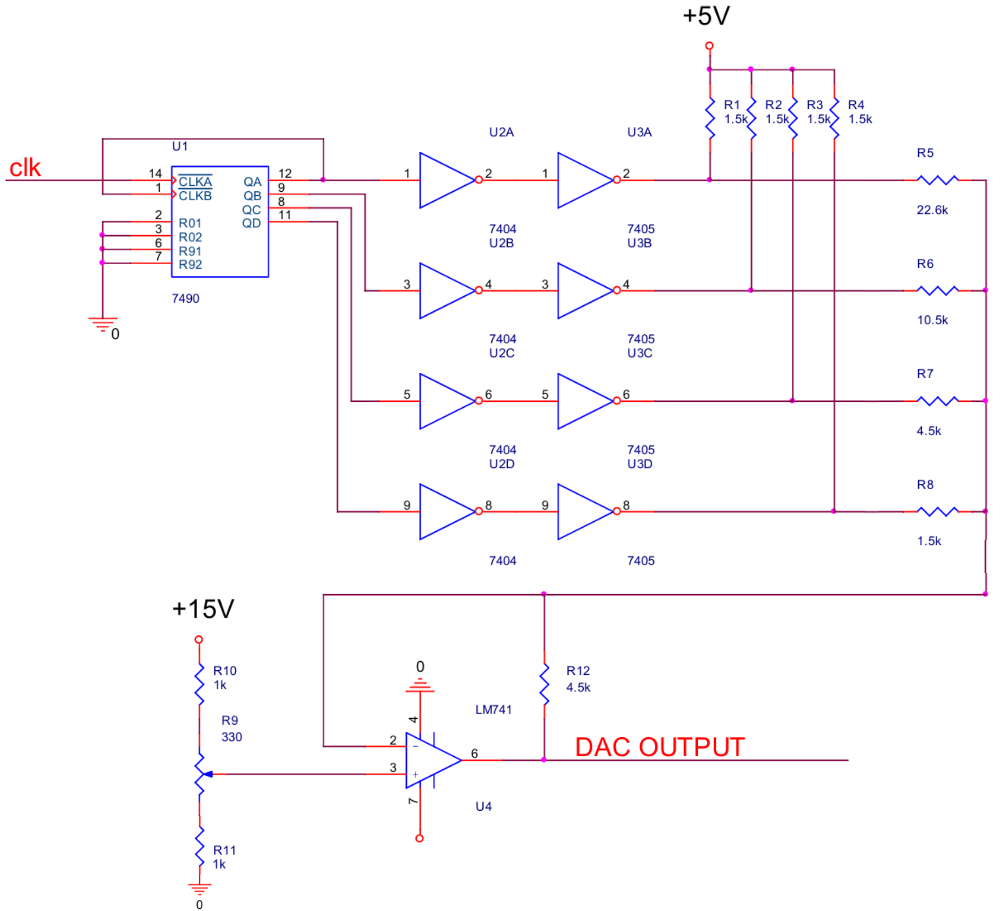</div>
<div class="stage" data-fit="1"><h3>단계 1 준비 ① · 칩·전원·리셋 핀 준비</h3><p class="banner">전원·신호발생기 OFF</p><figure class="board">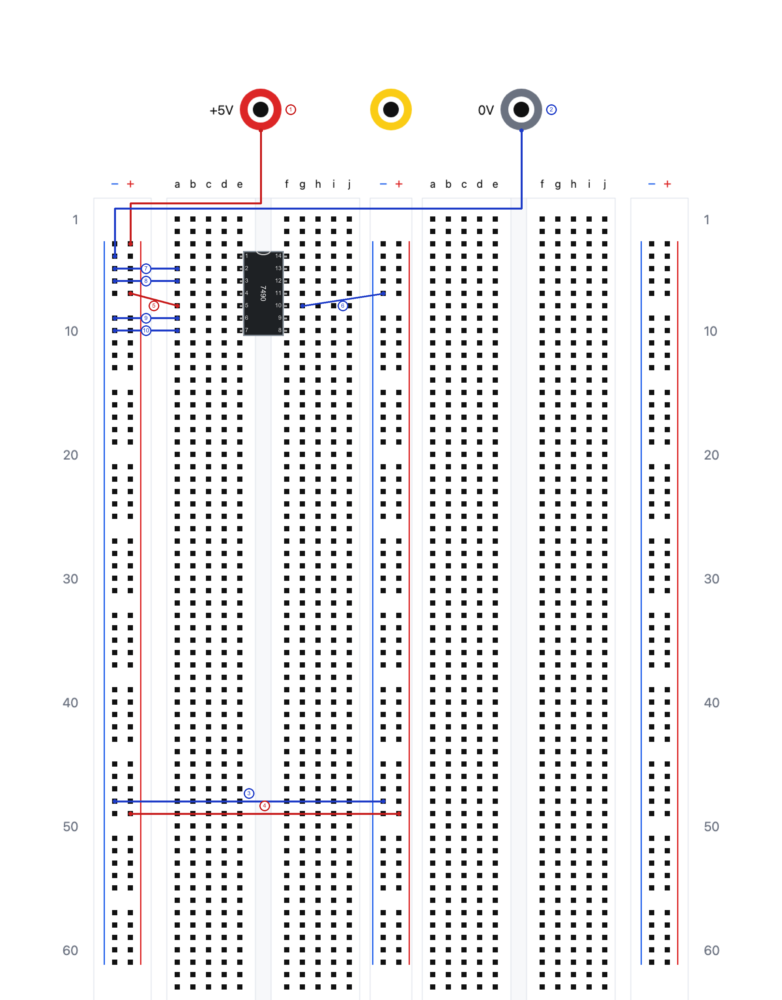</figure><p class="operation">7490을 놓고 pin 5를 +5V, pin 10을 GND에 연결해요 · pin 2·3·6·7(R01·R02·R91·R92)을 GND에 연결해요</p><ol class="steps"><li class="step" data-kind="vcc"><span class="box"></span><span class="n">1</span><span class="route">전원잭 → 좌 VCC레일3행</span><span class="desc">전원장치 +5V 잭</span></li><li class="step" data-kind="gnd"><span class="box"></span><span class="n">2</span><span class="route">전원잭 → 좌 GND레일4행</span><span class="desc">전원장치 0V 잭</span></li><li class="step" data-kind="gnd"><span class="box"></span><span class="n">3</span><span class="route">좌 GND레일48행 → 중앙GND레일48행</span><span class="desc">레일 브리지</span></li><li class="step" data-kind="vcc"><span class="box"></span><span class="n">4</span><span class="route">좌 VCC레일49행 → 중앙VCC레일49행</span><span class="desc">레일 브리지</span></li><li class="step" data-kind="vcc"><span class="box"></span><span class="n">5</span><span class="route">좌 a8 → 좌 VCC레일7행</span><span class="desc">pin 5 -&gt; +5V 레일</span></li><li class="step" data-kind="gnd"><span class="box"></span><span class="n">6</span><span class="route">좌 g8 → 중앙GND레일7행</span><span class="desc">pin 10 -&gt; GND 레일</span></li><li class="step" data-kind="gnd"><span class="box"></span><span class="n">7</span><span class="route">좌 a5 → 좌 GND레일5행</span><span class="desc">U1 pin 2 R01 -&gt; GND 레일</span></li><li class="step" data-kind="gnd"><span class="box"></span><span class="n">8</span><span class="route">좌 a6 → 좌 GND레일6행</span><span class="desc">U1 pin 3 R02 -&gt; GND 레일</span></li><li class="step" data-kind="gnd"><span class="box"></span><span class="n">9</span><span class="route">좌 a9 → 좌 GND레일9행</span><span class="desc">U1 pin 6 R91 -&gt; GND 레일</span></li><li class="step" data-kind="gnd"><span class="box"></span><span class="n">10</span><span class="route">좌 a10 → 좌 GND레일10행</span><span class="desc">U1 pin 7 R92 -&gt; GND 레일</span></li></ol><p><span class="box"></span><b>완료 확인:</b> 노치와 전원핀, 리셋 네 핀이 GND인지 대조했나요?</p></div>
<div class="stage" data-fit="2"><h3>단계 1 준비 ② · LED 준비</h3><p class="banner">전원·신호발생기 OFF</p><figure class="board">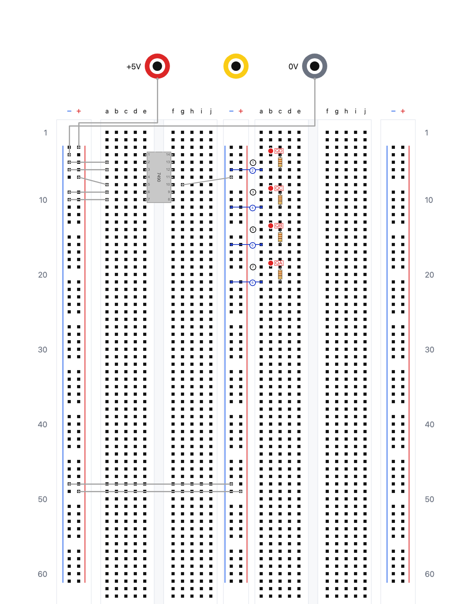</figure><p class="operation">위에서부터 QD·QC·QB·QA의 LED·330Ω·GND 사슬을 연결해요 · 출력 급전은 기능 단계에서 연결해요</p><ol class="steps"><li class="step" data-kind="sig"><span class="box"></span><span class="n">1</span><span class="route">우 b3 → 우 c6</span><span class="desc">QD: LED(우 b3→우 b4) + 330Ω(우 c4→우 c6) 직렬 · QD: 출력 1 이면 켜짐</span></li><li class="step" data-kind="gnd"><span class="box"></span><span class="n">2</span><span class="route">우 a6 → 중앙GND레일6행</span><span class="desc">QD 저항 아래 -&gt; GND</span></li><li class="step" data-kind="sig"><span class="box"></span><span class="n">3</span><span class="route">우 b8 → 우 c11</span><span class="desc">QC: LED(우 b8→우 b9) + 330Ω(우 c9→우 c11) 직렬 · QC: 출력 1 이면 켜짐</span></li><li class="step" data-kind="gnd"><span class="box"></span><span class="n">4</span><span class="route">우 a11 → 중앙GND레일11행</span><span class="desc">QC 저항 아래 -&gt; GND</span></li><li class="step" data-kind="sig"><span class="box"></span><span class="n">5</span><span class="route">우 b13 → 우 c16</span><span class="desc">QB: LED(우 b13→우 b14) + 330Ω(우 c14→우 c16) 직렬 · QB: 출력 1 이면 켜짐</span></li><li class="step" data-kind="gnd"><span class="box"></span><span class="n">6</span><span class="route">우 a16 → 중앙GND레일16행</span><span class="desc">QB 저항 아래 -&gt; GND</span></li><li class="step" data-kind="sig"><span class="box"></span><span class="n">7</span><span class="route">우 b18 → 우 c21</span><span class="desc">QA: LED(우 b18→우 b19) + 330Ω(우 c19→우 c21) 직렬 · QA: 출력 1 이면 켜짐</span></li><li class="step" data-kind="gnd"><span class="box"></span><span class="n">8</span><span class="route">우 a21 → 중앙GND레일21행</span><span class="desc">QA 저항 아래 -&gt; GND</span></li></ol><p><span class="box"></span><b>완료 확인:</b> LED 순서와 극성·330Ω·GND를 대조했나요? 출력 급전선 자리는 비어 있나요?</p></div>
<div class="stage" data-fit="3"><h3>단계 1</h3><p class="operation">전원과 발생기 출력을 끈 상태로 준비 ②까지 마쳐요 · 입력 CLK을 U1 pin 14에 꽂아요 · 신호선: QA: U1 pin 12 -&gt; U1 pin 1</p><figure class="board">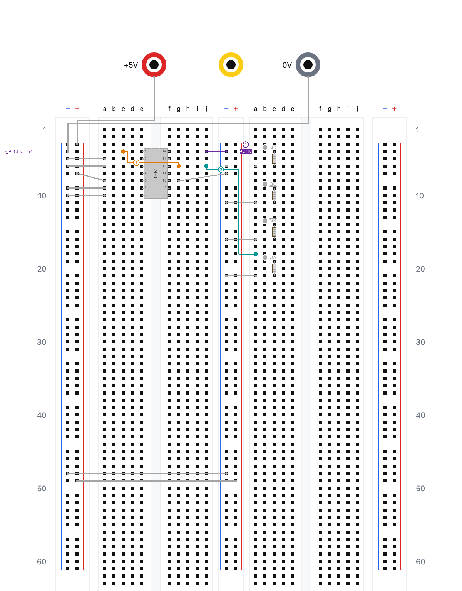</figure><ol class="steps"><li class="step" data-kind="sig"><span class="box"></span><span class="n">1</span><span class="route">중앙GND레일4행 → 좌 j4</span><span class="desc">입력 CLK -&gt; U1 pin 14 · 1 이면 레일 쪽 끝을 +5V 레일로 옮겨요</span></li><li class="step" data-kind="sig"><span class="box"></span><span class="n" style="background:#e67800">2</span><span class="route">좌 g6 → 좌 c4</span><span class="desc">QA: U1 pin 12 -&gt; U1 pin 1 (CLKB)</span></li><li class="step" data-kind="sig"><span class="box"></span><span class="n" style="background:#009696">3</span><span class="route">좌 j6 → 우 a18</span><span class="desc">QA = U1 pin 12 -&gt; LED QA</span></li></ol><p><span class="box"></span><b>확인:</b> 1Hz에서 LED QA가 켜졌다 꺼지기를 되풀이하는지 봐요.</p></div>
<div class="stage" data-fit="4"><h3>단계 2</h3><figure class="board">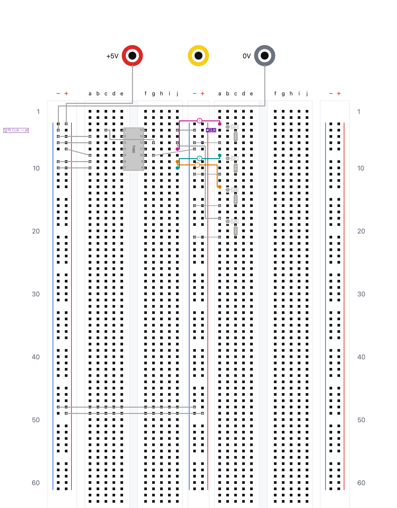</figure><ol class="steps"><li class="step" data-kind="sig"><span class="box"></span><span class="n" style="background:#e67800">1</span><span class="route">좌 j9 → 우 a13</span><span class="desc">QB = U1 pin 9 -&gt; LED QB</span></li><li class="step" data-kind="sig"><span class="box"></span><span class="n" style="background:#009696">2</span><span class="route">좌 j10 → 우 a8</span><span class="desc">QC = U1 pin 8 -&gt; LED QC</span></li><li class="step" data-kind="sig"><span class="box"></span><span class="n" style="background:#c81e96">3</span><span class="route">좌 j7 → 우 a3</span><span class="desc">QD = U1 pin 11 -&gt; LED QD</span></li></ol><p><span class="box"></span><b>확인:</b> LED QD~QA로 T1을 채워요.</p></div>
<div class="fit" data-fit="5">
<div class="wirebox"><h3>완성본</h3>
<figure class="board">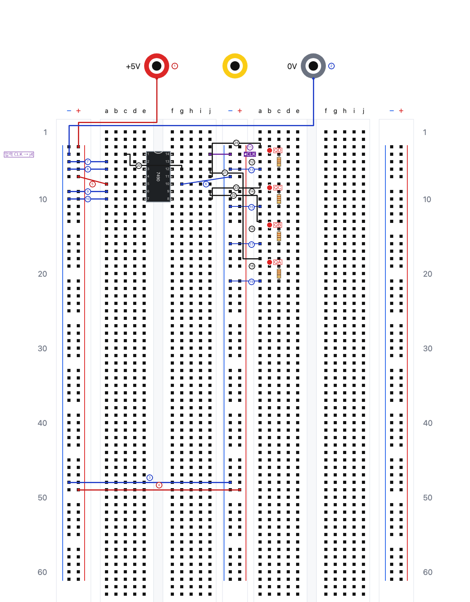</figure>
</div></div>
<div class="fit" data-fit="6">
<div class="unused"><b>미사용 핀</b><div class="chipunused"><b>U1 = 7490</b><ul><li><span class="box"></span>미사용 4, 13 · 연결하지 않음 · No Connect</li></ul></div></div>
<div class="tblock">
<h3>T1 · 7490 BCD 카운터 출력 기록</h3>
<p class="table-purpose">1Hz 반복 클록에서 QD~QA LED가 COUNT 0부터 9까지 순서대로 바뀌고 0으로 돌아오는지 확인한다.</p>
<aside class="io-locations" aria-label="입력과 LED 위치"><p class="io-title"><b>입력·LED 위치</b></p><section class="io-groups"><section class="io-group"><b>가운데 입력 점퍼</b><span class="io-direction">위 ↓ 아래</span><ol><li class="io-input" title="중앙GND레일4행"><span class="io-rank">첫째</span><span class="io-symbol">●</span><strong>CLK</strong></li></ol></section><section class="io-group io-led-group"><b>오른쪽 LED</b><span class="io-direction">위 ↓ 아래</span><ol><li class="io-led"><span class="io-symbol">○</span><span>①</span><strong>QD</strong></li><li class="io-led"><span class="io-symbol">○</span><span>②</span><strong>QC</strong></li><li class="io-led"><span class="io-symbol">○</span><span>③</span><strong>QB</strong></li><li class="io-led"><span class="io-symbol">○</span><span>④</span><strong>QA</strong></li></ol></section></section></aside>
<table class="comparison-table"><colgroup><col style="width:7%;"><col style="width:19%;"><col style="width:24%;"><col style="width:18%;"><col style="width:18%;"><col style="width:14%;"></colgroup><thead><tr>
<th>스텝</th>
<th>조작</th>
<th>입력 설정<div class="mirror-head" style="--g:1"><span>가운데</span></div></th>
<th>예상 켜지는 LED</th>
<th>예상 꺼지는 LED</th>
<th>실제 결과</th>
</tr></thead><tbody>
<tr>
<td>S1</td>
<td>전원과 발생기를 켠다. 네 LED가 모두 꺼진 구간을 COUNT 0으로 잡는다</td>
<td><div class="mirror" style="--g:1"><div class="col"><span class="slot">CLK=반복 클록</span></div></div></td>
<td>없음</td>
<td>①QD · ②QC · ③QB · ④QA</td>
<td class="actual"></td>
</tr>
<tr>
<td>S2</td>
<td>COUNT 1 구간</td>
<td><div class="mirror" style="--g:1"><div class="col"><span class="slot">CLK=반복 클록</span></div></div></td>
<td>④QA</td>
<td>①QD · ②QC · ③QB</td>
<td class="actual"></td>
</tr>
<tr>
<td>S3</td>
<td>COUNT 2 구간</td>
<td><div class="mirror" style="--g:1"><div class="col"><span class="slot">CLK=반복 클록</span></div></div></td>
<td>③QB</td>
<td>①QD · ②QC · ④QA</td>
<td class="actual"></td>
</tr>
<tr>
<td>S4</td>
<td>COUNT 3 구간</td>
<td><div class="mirror" style="--g:1"><div class="col"><span class="slot">CLK=반복 클록</span></div></div></td>
<td>③QB · ④QA</td>
<td>①QD · ②QC</td>
<td class="actual"></td>
</tr>
<tr>
<td>S5</td>
<td>COUNT 4 구간</td>
<td><div class="mirror" style="--g:1"><div class="col"><span class="slot">CLK=반복 클록</span></div></div></td>
<td>②QC</td>
<td>①QD · ③QB · ④QA</td>
<td class="actual"></td>
</tr>
<tr>
<td>S6</td>
<td>COUNT 5 구간</td>
<td><div class="mirror" style="--g:1"><div class="col"><span class="slot">CLK=반복 클록</span></div></div></td>
<td>②QC · ④QA</td>
<td>①QD · ③QB</td>
<td class="actual"></td>
</tr>
<tr>
<td>S7</td>
<td>COUNT 6 구간</td>
<td><div class="mirror" style="--g:1"><div class="col"><span class="slot">CLK=반복 클록</span></div></div></td>
<td>②QC · ③QB</td>
<td>①QD · ④QA</td>
<td class="actual"></td>
</tr>
<tr>
<td>S8</td>
<td>COUNT 7 구간</td>
<td><div class="mirror" style="--g:1"><div class="col"><span class="slot">CLK=반복 클록</span></div></div></td>
<td>②QC · ③QB · ④QA</td>
<td>①QD</td>
<td class="actual"></td>
</tr>
<tr>
<td>S9</td>
<td>COUNT 8 구간</td>
<td><div class="mirror" style="--g:1"><div class="col"><span class="slot">CLK=반복 클록</span></div></div></td>
<td>①QD</td>
<td>②QC · ③QB · ④QA</td>
<td class="actual"></td>
</tr>
<tr>
<td>S10</td>
<td>COUNT 9 구간</td>
<td><div class="mirror" style="--g:1"><div class="col"><span class="slot">CLK=반복 클록</span></div></div></td>
<td>①QD · ④QA</td>
<td>②QC · ③QB</td>
<td class="actual"></td>
</tr>
<tr>
<td>S11</td>
<td>COUNT 0으로 복귀</td>
<td><div class="mirror" style="--g:1"><div class="col"><span class="slot">CLK=반복 클록</span></div></div></td>
<td>없음</td>
<td>①QD · ②QC · ③QB · ④QA</td>
<td class="actual"></td>
</tr>
</tbody></table>
</div>

<div class="circuit-notes"><b>메모</b></div>
</div></section>
<section class="circuit">
<div class="fit" data-fit="7"><div class="trail">실험 1: C1 › <b>C2</b> › C3</div><h2>C2 · 실험 1 — 2~3. DAC 전체 회로 (74HC04 + 74HC05 + LM741) · 기록: T2, T3, T4</h2><div class="banner">앞 회로(C1)를 그대로 두고 이어 붙여요. 점퍼선은 뽑지 않아요 · 더 꽂을 칩: 74HC04, 74HC05, LM741</div></div>
<div class="stage" data-fit="8"><h3>단계 1</h3><p class="operation">전원과 발생기 출력을 끈 상태로 U2(74HC04)를 꽂고 pin 14를 +5V, pin 7을 GND에 이어요 · 신호선: U1 pin 12 (LED QA 스트립) -&gt; U2 pin 1 · U1 pin 9 (LED QB 스트립) -&gt; U2 pin 3 · U1 pin 8 (LED QC 스트립) -&gt; U2 pin 5</p><figure class="board">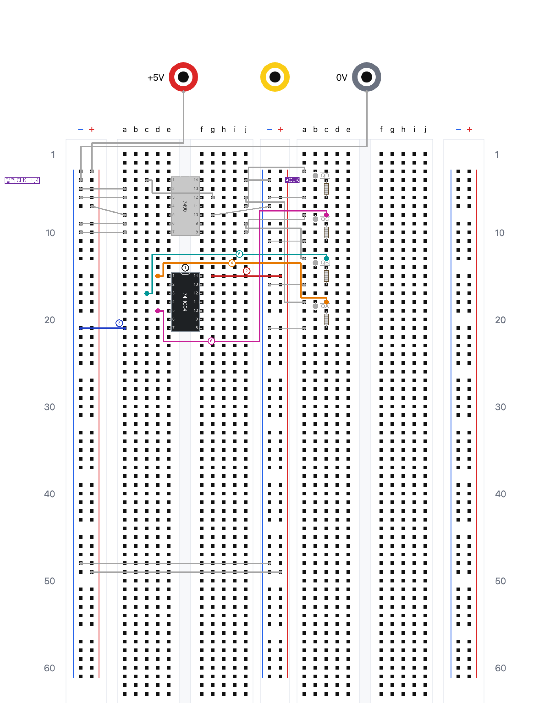</figure><ol class="steps"><li class="step" data-kind="sig"><span class="box"></span><span class="n">1</span><span class="route">(빈 자리) → 꽂는다: 74HC04</span><span class="desc">좌 15행에 새로 꽂는다</span></li><li class="step" data-kind="vcc"><span class="box"></span><span class="n">2</span><span class="route">좌 g15 → 중앙VCC레일15행</span><span class="desc">pin 14 -&gt; +5V 레일</span></li><li class="step" data-kind="gnd"><span class="box"></span><span class="n">3</span><span class="route">좌 a21 → 좌 GND레일21행</span><span class="desc">pin 7 -&gt; GND 레일</span></li><li class="step" data-kind="sig"><span class="box"></span><span class="n" style="background:#e67800">4</span><span class="route">좌 d15 → 우 c18</span><span class="desc">QA: U1 pin 12 (LED QA 스트립) -&gt; U2 pin 1</span></li><li class="step" data-kind="sig"><span class="box"></span><span class="n" style="background:#009696">5</span><span class="route">좌 c17 → 우 c13</span><span class="desc">QB: U1 pin 9 (LED QB 스트립) -&gt; U2 pin 3</span></li><li class="step" data-kind="sig"><span class="box"></span><span class="n" style="background:#c81e96">6</span><span class="route">좌 d19 → 우 c8</span><span class="desc">QC: U1 pin 8 (LED QC 스트립) -&gt; U2 pin 5</span></li></ol><h4>V1 · 7404 앞 세 입력 확인</h4><section class="observation-procedure">
<p class="observation-purpose">QA·QB·QC가 U2로 들어가 반전되어 나오는지 1Hz 카운트 구간마다 확인한다.</p>
<p><b>준비·초기화:</b> 전원과 발생기 출력을 끈 상태에서 발생기를 사각파·주기 1s로 맞추고, CLK 선을 잇기 전에 오실로스코프로 0V~+5V를 확인한다. 발생기·오실로스코프·회로 GND를 공통으로 잇는다. 발생기를 0V로 두고 전원을 켠 뒤 시작한다. 오실로스코프 프로브를 U2 pin 2·4·6에 차례로 대고, 느린 수평 눈금(Roll 등)이나 DMM으로 1Hz 변화를 본다. 카운트 구간은 LED QD~QA로 가른다.</p>
<aside class="io-locations" aria-label="입력과 LED 위치"><p class="io-title"><b>입력·LED 위치</b></p><section class="io-groups"><section class="io-group"><b>가운데 입력 점퍼</b><span class="io-direction">위 ↓ 아래</span><ol><li class="io-input" title="중앙GND레일4행"><span class="io-rank">첫째</span><span class="io-symbol">●</span><strong>CLK</strong></li></ol></section><section class="io-group io-led-group"><b>오른쪽 LED</b><span class="io-direction">위 ↓ 아래</span><ol><li class="io-led io-muted"><span class="io-symbol">○</span><span>①</span><strong>QD</strong></li><li class="io-led io-muted"><span class="io-symbol">○</span><span>②</span><strong>QC</strong></li><li class="io-led io-muted"><span class="io-symbol">○</span><span>③</span><strong>QB</strong></li><li class="io-led io-muted"><span class="io-symbol">○</span><span>④</span><strong>QA</strong></li></ol></section></section></aside><table class="comparison-table"><colgroup><col style="width:7%;"><col style="width:35%;"><col style="width:22%;"><col style="width:22%;"><col style="width:14%;"></colgroup><thead><tr>
<th>순서</th>
<th>조작</th>
<th>입력 설정<div class="mirror-head" style="--g:1"><span>가운데</span></div></th>
<th>측정 핀·예상 논리값</th>
<th>실제 결과</th>
</tr></thead><tbody>
<tr>
<td>1</td>
<td>발생기 0V로 전원을 켠다</td>
<td><div class="mirror" style="--g:1"><div class="col"><span class="slot">CLK = 0</span></div></div></td>
<td>QA_N (U2 pin 2): 미정<br>QB_N (U2 pin 4): 미정<br>QC_N (U2 pin 6): 미정</td>
<td class="actual"></td>
</tr>
<tr>
<td>2</td>
<td>반복 클록. LED 넷이 모두 꺼진 COUNT 0 구간</td>
<td><div class="mirror" style="--g:1"><div class="col"><span class="slot"><span class="input-change">CLK = 반복 클록</span></span></div></div></td>
<td>QA_N (U2 pin 2): 1<br>QB_N (U2 pin 4): 1<br>QC_N (U2 pin 6): 1</td>
<td class="actual"></td>
</tr>
<tr>
<td>3</td>
<td>COUNT 1 구간(LED QA만 켜짐)</td>
<td><div class="mirror" style="--g:1"><div class="col"><span class="slot">CLK = 반복 클록</span></div></div></td>
<td>QA_N (U2 pin 2): 0<br>QB_N (U2 pin 4): 1<br>QC_N (U2 pin 6): 1</td>
<td class="actual"></td>
</tr>
<tr>
<td>4</td>
<td>COUNT 2 구간(LED QB만 켜짐)</td>
<td><div class="mirror" style="--g:1"><div class="col"><span class="slot">CLK = 반복 클록</span></div></div></td>
<td>QA_N (U2 pin 2): 1<br>QB_N (U2 pin 4): 0<br>QC_N (U2 pin 6): 1</td>
<td class="actual"></td>
</tr>
<tr>
<td>5</td>
<td>COUNT 4 구간(LED QC만 켜짐)</td>
<td><div class="mirror" style="--g:1"><div class="col"><span class="slot">CLK = 반복 클록</span></div></div></td>
<td>QA_N (U2 pin 2): 1<br>QB_N (U2 pin 4): 1<br>QC_N (U2 pin 6): 0</td>
<td class="actual"></td>
</tr>
</tbody></table></section></div>
<div class="stage" data-fit="9"><h3>단계 2</h3><p class="operation">전원과 발생기 출력을 끄고 U3(74HC05)를 꽂아 pin 14를 +5V, pin 7을 GND에 이어요 · 풀업 R1·R2(1.5k)를 U3 pin 2·4 행과 +5V 레일 사이에 꽂아요 · 신호선: U1 pin 11 -&gt; U2 pin 9 · U2 pin 2 -&gt; U3 pin 1 · U2 pin 4 -&gt; U3 pin 3</p><figure class="board">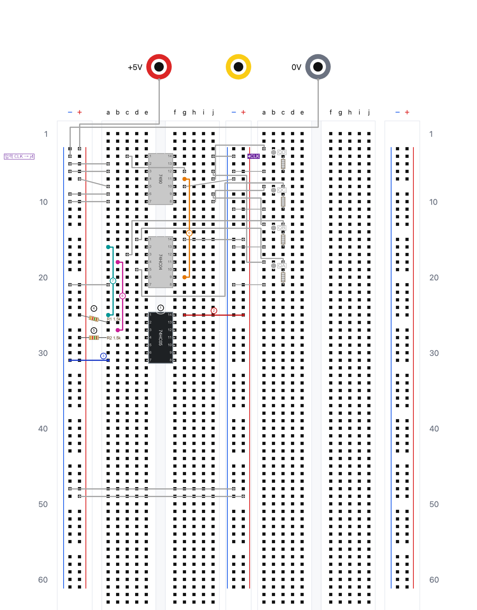</figure><ol class="steps"><li class="step" data-kind="sig"><span class="box"></span><span class="n">1</span><span class="route">(빈 자리) → 꽂는다: 74HC05</span><span class="desc">좌 25행에 새로 꽂는다</span></li><li class="step" data-kind="vcc"><span class="box"></span><span class="n">2</span><span class="route">좌 g25 → 중앙VCC레일25행</span><span class="desc">pin 14 -&gt; +5V 레일</span></li><li class="step" data-kind="gnd"><span class="box"></span><span class="n">3</span><span class="route">좌 a31 → 좌 GND레일31행</span><span class="desc">pin 7 -&gt; GND 레일</span></li><li class="step" data-kind="sig"><span class="box"></span><span class="n">4</span><span class="route">좌 a26 → 좌 VCC레일25행</span><span class="desc">R1 1.5kΩ(좌 a26→좌 VCC레일25행) · U3 pin 2 풀업 -&gt; +5V</span></li><li class="step" data-kind="sig"><span class="box"></span><span class="n">5</span><span class="route">좌 a28 → 좌 VCC레일28행</span><span class="desc">R2 1.5kΩ(좌 a28→좌 VCC레일28행) · U3 pin 4 풀업 -&gt; +5V</span></li><li class="step" data-kind="sig"><span class="box"></span><span class="n" style="background:#e67800">6</span><span class="route">좌 g7 → 좌 g20</span><span class="desc">QD: U1 pin 11 -&gt; U2 pin 9</span></li><li class="step" data-kind="mid"><span class="box"></span><span class="n" style="background:#009696">7</span><span class="route">좌 a16 → 좌 a25</span><span class="desc">QA': U2 pin 2 -&gt; U3 pin 1</span></li><li class="step" data-kind="mid"><span class="box"></span><span class="n" style="background:#c81e96">8</span><span class="route">좌 b18 → 좌 b27</span><span class="desc">QB': U2 pin 4 -&gt; U3 pin 3</span></li></ol><h4>V2 · 7405 앞 두 비트 확인</h4><section class="observation-procedure">
<p class="observation-purpose">QA·QB가 U2와 U3을 거쳐 원래 값으로 돌아오고, 풀업으로 High가 만들어지는지 확인한다.</p>
<p><b>준비·초기화:</b> 전원과 발생기 출력을 끈 상태로 2단계 배선을 마친 뒤 발생기를 0V로 두고 전원을 켠다. 발생기는 사각파·주기 1s다. 프로브를 U3 pin 2·4에 차례로 댄다. 카운트 구간은 LED로 가른다.</p>
<aside class="io-locations" aria-label="입력과 LED 위치"><p class="io-title"><b>입력·LED 위치</b></p><section class="io-groups"><section class="io-group"><b>가운데 입력 점퍼</b><span class="io-direction">위 ↓ 아래</span><ol><li class="io-input" title="중앙GND레일4행"><span class="io-rank">첫째</span><span class="io-symbol">●</span><strong>CLK</strong></li></ol></section><section class="io-group io-led-group"><b>오른쪽 LED</b><span class="io-direction">위 ↓ 아래</span><ol><li class="io-led io-muted"><span class="io-symbol">○</span><span>①</span><strong>QD</strong></li><li class="io-led io-muted"><span class="io-symbol">○</span><span>②</span><strong>QC</strong></li><li class="io-led io-muted"><span class="io-symbol">○</span><span>③</span><strong>QB</strong></li><li class="io-led io-muted"><span class="io-symbol">○</span><span>④</span><strong>QA</strong></li></ol></section></section></aside><table class="comparison-table"><colgroup><col style="width:7%;"><col style="width:35%;"><col style="width:22%;"><col style="width:22%;"><col style="width:14%;"></colgroup><thead><tr>
<th>순서</th>
<th>조작</th>
<th>입력 설정<div class="mirror-head" style="--g:1"><span>가운데</span></div></th>
<th>측정 핀·예상 논리값</th>
<th>실제 결과</th>
</tr></thead><tbody>
<tr>
<td>1</td>
<td>발생기 0V로 전원을 켠다</td>
<td><div class="mirror" style="--g:1"><div class="col"><span class="slot">CLK = 0</span></div></div></td>
<td>OA (U3 pin 2): 미정<br>OB (U3 pin 4): 미정</td>
<td class="actual"></td>
</tr>
<tr>
<td>2</td>
<td>반복 클록. COUNT 0 구간</td>
<td><div class="mirror" style="--g:1"><div class="col"><span class="slot"><span class="input-change">CLK = 반복 클록</span></span></div></div></td>
<td>OA (U3 pin 2): 0<br>OB (U3 pin 4): 0</td>
<td class="actual"></td>
</tr>
<tr>
<td>3</td>
<td>COUNT 1 구간</td>
<td><div class="mirror" style="--g:1"><div class="col"><span class="slot">CLK = 반복 클록</span></div></div></td>
<td>OA (U3 pin 2): 1<br>OB (U3 pin 4): 0</td>
<td class="actual"></td>
</tr>
<tr>
<td>4</td>
<td>COUNT 2 구간</td>
<td><div class="mirror" style="--g:1"><div class="col"><span class="slot">CLK = 반복 클록</span></div></div></td>
<td>OA (U3 pin 2): 0<br>OB (U3 pin 4): 1</td>
<td class="actual"></td>
</tr>
<tr>
<td>5</td>
<td>COUNT 3 구간</td>
<td><div class="mirror" style="--g:1"><div class="col"><span class="slot">CLK = 반복 클록</span></div></div></td>
<td>OA (U3 pin 2): 1<br>OB (U3 pin 4): 1</td>
<td class="actual"></td>
</tr>
</tbody></table></section></div>
<div class="stage" data-fit="10"><h3>단계 3</h3><p class="operation">전원과 발생기 출력을 끄고 풀업 R3·R4(1.5k)를 U3 pin 6·8 행과 +5V 레일 사이에 꽂아요 · 신호선: U2 pin 6 -&gt; U3 pin 5 · U2 pin 8 -&gt; U3 pin 9</p><figure class="board">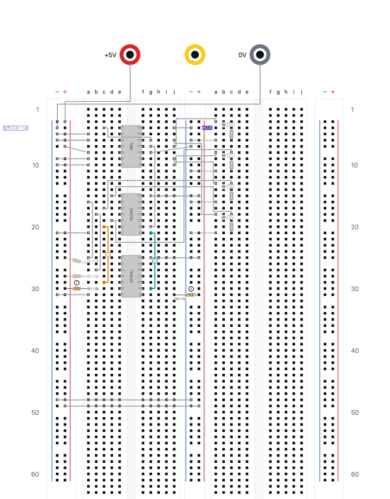</figure><ol class="steps"><li class="step" data-kind="sig"><span class="box"></span><span class="n">1</span><span class="route">좌 a30 → 좌 VCC레일30행</span><span class="desc">R3 1.5kΩ(좌 a30→좌 VCC레일30행) · U3 pin 6 풀업 -&gt; +5V</span></li><li class="step" data-kind="sig"><span class="box"></span><span class="n">2</span><span class="route">좌 j31 → 중앙VCC레일31행</span><span class="desc">R4 1.5kΩ(좌 j31→중앙VCC레일31행) · U3 pin 8 풀업 -&gt; +5V</span></li><li class="step" data-kind="mid"><span class="box"></span><span class="n" style="background:#e67800">3</span><span class="route">좌 c20 → 좌 c29</span><span class="desc">QC': U2 pin 6 -&gt; U3 pin 5</span></li><li class="step" data-kind="mid"><span class="box"></span><span class="n" style="background:#009696">4</span><span class="route">좌 g21 → 좌 g30</span><span class="desc">QD': U2 pin 8 -&gt; U3 pin 9</span></li></ol><h4>V3 · 7405 뒤 두 비트 확인</h4><section class="observation-procedure">
<p class="observation-purpose">QC·QD가 U2와 U3을 거쳐 원래 값으로 돌아오는지 확인한다.</p>
<p><b>준비·초기화:</b> 전원과 발생기 출력을 끈 상태로 3단계 배선을 마친 뒤 발생기를 0V로 두고 전원을 켠다. 발생기는 사각파·주기 1s다. 프로브를 U3 pin 6·8에 차례로 댄다. 카운트 구간은 LED로 가른다.</p>
<aside class="io-locations" aria-label="입력과 LED 위치"><p class="io-title"><b>입력·LED 위치</b></p><section class="io-groups"><section class="io-group"><b>가운데 입력 점퍼</b><span class="io-direction">위 ↓ 아래</span><ol><li class="io-input" title="중앙GND레일4행"><span class="io-rank">첫째</span><span class="io-symbol">●</span><strong>CLK</strong></li></ol></section><section class="io-group io-led-group"><b>오른쪽 LED</b><span class="io-direction">위 ↓ 아래</span><ol><li class="io-led io-muted"><span class="io-symbol">○</span><span>①</span><strong>QD</strong></li><li class="io-led io-muted"><span class="io-symbol">○</span><span>②</span><strong>QC</strong></li><li class="io-led io-muted"><span class="io-symbol">○</span><span>③</span><strong>QB</strong></li><li class="io-led io-muted"><span class="io-symbol">○</span><span>④</span><strong>QA</strong></li></ol></section></section></aside><table class="comparison-table"><colgroup><col style="width:7%;"><col style="width:35%;"><col style="width:22%;"><col style="width:22%;"><col style="width:14%;"></colgroup><thead><tr>
<th>순서</th>
<th>조작</th>
<th>입력 설정<div class="mirror-head" style="--g:1"><span>가운데</span></div></th>
<th>측정 핀·예상 논리값</th>
<th>실제 결과</th>
</tr></thead><tbody>
<tr>
<td>1</td>
<td>발생기 0V로 전원을 켠다</td>
<td><div class="mirror" style="--g:1"><div class="col"><span class="slot">CLK = 0</span></div></div></td>
<td>OC (U3 pin 6): 미정<br>OD (U3 pin 8): 미정</td>
<td class="actual"></td>
</tr>
<tr>
<td>2</td>
<td>반복 클록. COUNT 0 구간</td>
<td><div class="mirror" style="--g:1"><div class="col"><span class="slot"><span class="input-change">CLK = 반복 클록</span></span></div></div></td>
<td>OC (U3 pin 6): 0<br>OD (U3 pin 8): 0</td>
<td class="actual"></td>
</tr>
<tr>
<td>3</td>
<td>COUNT 4 구간</td>
<td><div class="mirror" style="--g:1"><div class="col"><span class="slot">CLK = 반복 클록</span></div></div></td>
<td>OC (U3 pin 6): 1<br>OD (U3 pin 8): 0</td>
<td class="actual"></td>
</tr>
<tr>
<td>4</td>
<td>COUNT 8 구간</td>
<td><div class="mirror" style="--g:1"><div class="col"><span class="slot">CLK = 반복 클록</span></div></div></td>
<td>OC (U3 pin 6): 0<br>OD (U3 pin 8): 1</td>
<td class="actual"></td>
</tr>
<tr>
<td>5</td>
<td>COUNT 9 뒤 COUNT 0으로 복귀</td>
<td><div class="mirror" style="--g:1"><div class="col"><span class="slot">CLK = 반복 클록</span></div></div></td>
<td>OC (U3 pin 6): 0<br>OD (U3 pin 8): 0</td>
<td class="actual"></td>
</tr>
</tbody></table></section></div>
<div class="stage" data-fit="11"><h3>단계 4 준비 ① · LM741·+15V 전원 준비</h3><p class="banner">전원·신호발생기 OFF</p><figure class="board">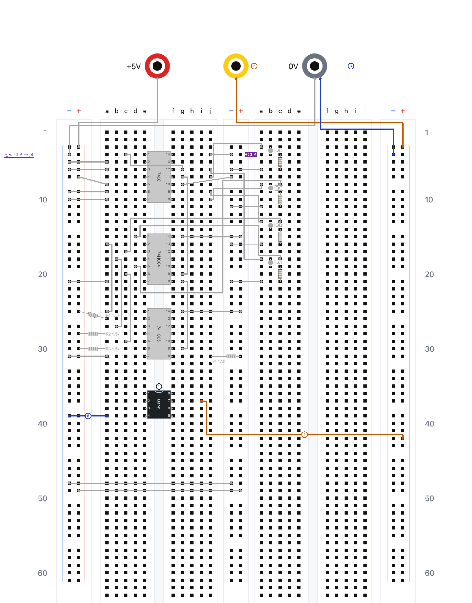</figure><p class="operation">U4(LM741)를 놓고 pin 4를 GND에 이어요 · 노랑 잭을 우 바깥 VCC 레일(+15V)에, 회색 잭 둘째 선을 우 바깥 GND 레일에 잇고 U4 pin 7을 그 +15V 레일에 이어요</p><ol class="steps"><li class="step" data-kind="sig"><span class="box"></span><span class="n">1</span><span class="route">(빈 자리) → 꽂는다: LM741</span><span class="desc">좌 36행에 새로 꽂는다</span></li><li class="step" data-kind="v15"><span class="box"></span><span class="n">2</span><span class="route">전원잭 → 우 +15V레일3행</span><span class="desc">전원장치 +15V 잭(노랑)</span></li><li class="step" data-kind="gnd"><span class="box"></span><span class="n">3</span><span class="route">전원잭 → 우 GND레일4행</span><span class="desc">전원장치 0V 잭 -&gt; 우 바깥 GND</span></li><li class="step" data-kind="v15"><span class="box"></span><span class="n">4</span><span class="route">좌 i37 → 우 +15V레일42행</span><span class="desc">pin 7 -&gt; +15V 레일</span></li><li class="step" data-kind="gnd"><span class="box"></span><span class="n">5</span><span class="route">좌 a39 → 좌 GND레일39행</span><span class="desc">pin 4 -&gt; GND 레일</span></li></ol><p><span class="box"></span><b>완료 확인:</b> +15V 레일에 U4 pin 7 하나만 닿았고 로직 칩 전원선이 그 레일에 없는지 대조했나요?</p></div>
<div class="stage" data-fit="12"><h3>단계 4 준비 ② · 가중 저항·Rf 준비</h3><p class="banner">전원·신호발생기 OFF</p><figure class="board">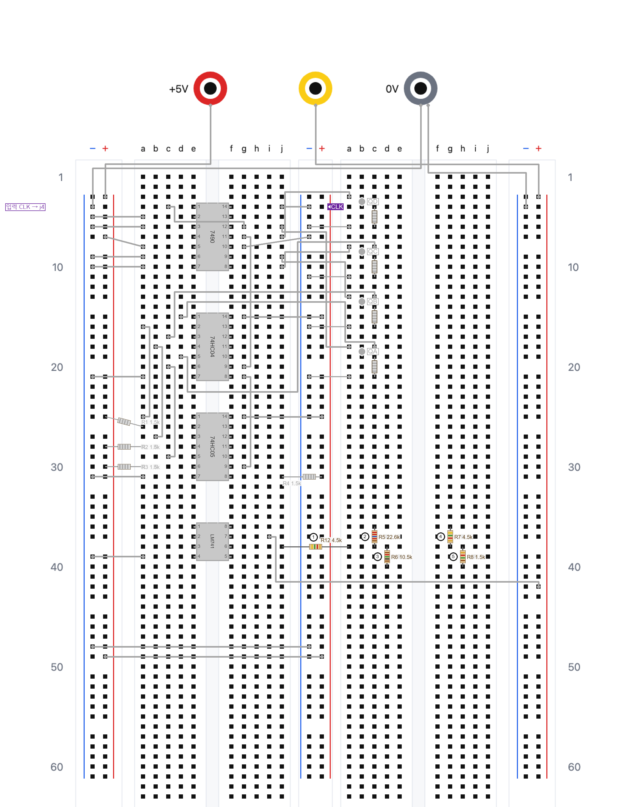</figure><p class="operation">R5 22.6k·R6 10.5k·R7 4.5k·R8 1.5k를 우 블록 36~40행에 세워 꽂고, R12 4.5k를 U4 pin 6 행(좌 j38)과 우 a38 사이에 눕혀 꽂아요</p><ol class="steps"><li class="step" data-kind="sig"><span class="box"></span><span class="n">1</span><span class="route">좌 j38 → 우 a38</span><span class="desc">R12 4.5kΩ(좌 j38→우 a38) · Rf: U4 pin 6 행 -&gt; 가산 노드</span></li><li class="step" data-kind="sig"><span class="box"></span><span class="n">2</span><span class="route">우 c36 → 우 c38</span><span class="desc">R5 22.6kΩ(우 c36→우 c38) · QA 비트(LSB): OA 스트립 -&gt; 가산 노드</span></li><li class="step" data-kind="sig"><span class="box"></span><span class="n">3</span><span class="route">우 d40 → 우 d38</span><span class="desc">R6 10.5kΩ(우 d40→우 d38) · QB 비트: OB 스트립 -&gt; 가산 노드</span></li><li class="step" data-kind="sig"><span class="box"></span><span class="n">4</span><span class="route">우 g36 → 우 g38</span><span class="desc">R7 4.5kΩ(우 g36→우 g38) · QC 비트: OC 스트립 -&gt; 가산 노드</span></li><li class="step" data-kind="sig"><span class="box"></span><span class="n">5</span><span class="route">우 h40 → 우 h38</span><span class="desc">R8 1.5kΩ(우 h40→우 h38) · QD 비트(MSB): OD 스트립 -&gt; 가산 노드</span></li></ol><p><span class="box"></span><b>완료 확인:</b> 저항값과 색띠, 양 끝 행을 그림과 대조했나요?</p></div>
<div class="stage" data-fit="13"><h3>단계 4 준비 ③ · 분배기 준비</h3><p class="banner">전원·신호발생기 OFF</p><figure class="board">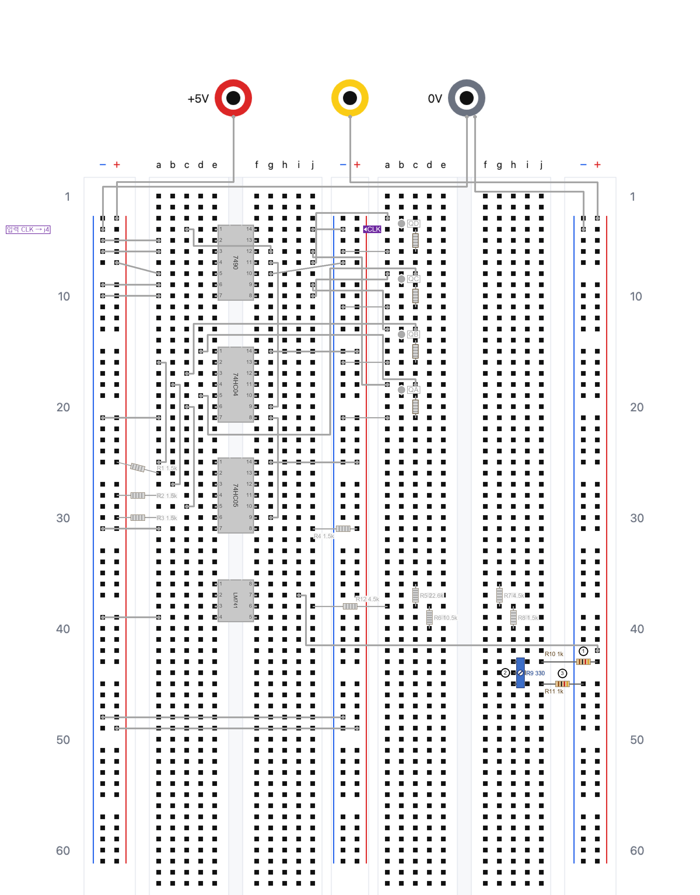</figure><p class="operation">R10 1k를 우 j43과 +15V 레일 사이에, R9 330 가변저항을 우 h43·h44·h45에, R11 1k를 우 j45와 우 바깥 GND 레일 사이에 꽂아요</p><ol class="steps"><li class="step" data-kind="sig"><span class="box"></span><span class="n">1</span><span class="route">우 j43 → 우 +15V레일43행</span><span class="desc">R10 1kΩ(우 j43→우 +15V레일43행) · +15V -&gt; R9 윗단자</span></li><li class="step" data-kind="sig"><span class="box"></span><span class="n">2</span><span class="route">우 h43 → 우 h45</span><span class="desc">R9 330Ω 가변저항(우 h43·우 h44 와이퍼·우 h45) · 분배기 가변저항 — 가운데 단자가 V+ 후보</span></li><li class="step" data-kind="sig"><span class="box"></span><span class="n">3</span><span class="route">우 j45 → 우 GND레일45행</span><span class="desc">R11 1kΩ(우 j45→우 GND레일45행) · R9 아랫단자 -&gt; GND</span></li></ol><p><span class="box"></span><b>완료 확인:</b> R10이 +15V 레일, R11이 GND 레일에 닿고 R9 가운데 다리가 h44인지 대조했나요?</p></div>
<div class="stage" data-fit="14"><h3>단계 4</h3><p class="operation">전원과 발생기 출력을 끈 상태로 준비 ③까지 마쳐요 · 발생기를 1.0kHz로 바꿔요 · 신호선: 가산 노드 우 e38 -&gt; 우 f38 · U3 pin 2 -&gt; R5 스트립(우 36행) · U3 pin 4 -&gt; R6 스트립(우 40행) · U3 pin 6 -&gt; R7 스트립(우 f~j 36행) · U3 pin 8 -&gt; R8 스트립(우 f~j 40행)</p><figure class="board">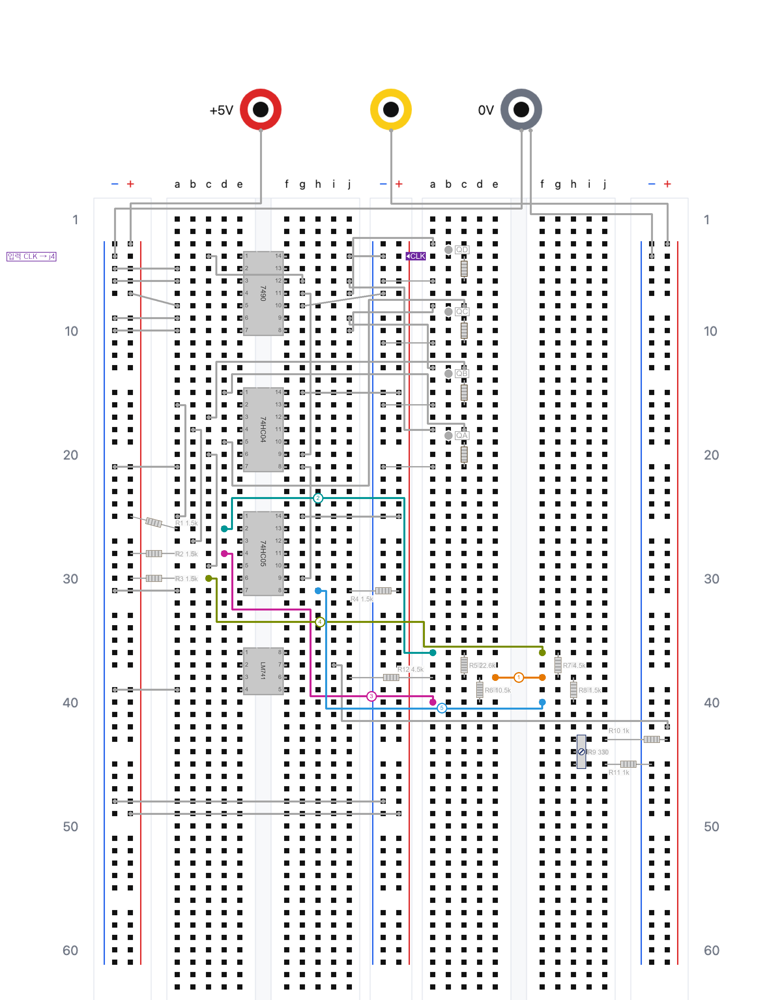</figure><ol class="steps"><li class="step" data-kind="mid"><span class="box"></span><span class="n" style="background:#e67800">1</span><span class="route">우 e38 → 우 f38</span><span class="desc">가산 노드: 우 a~e 38행 -&gt; 우 f~j 38행</span></li><li class="step" data-kind="mid"><span class="box"></span><span class="n" style="background:#009696">2</span><span class="route">좌 d26 → 우 a36</span><span class="desc">OA: U3 pin 2 -&gt; R5 윗다리 스트립</span></li><li class="step" data-kind="mid"><span class="box"></span><span class="n" style="background:#c81e96">3</span><span class="route">좌 d28 → 우 a40</span><span class="desc">OB: U3 pin 4 -&gt; R6 아랫다리 스트립</span></li><li class="step" data-kind="mid"><span class="box"></span><span class="n" style="background:#788c00">4</span><span class="route">좌 c30 → 우 f36</span><span class="desc">OC: U3 pin 6 -&gt; R7 윗다리 스트립</span></li><li class="step" data-kind="mid"><span class="box"></span><span class="n" style="background:#2896dc">5</span><span class="route">좌 h31 → 우 f40</span><span class="desc">OD: U3 pin 8 -&gt; R8 아랫다리 스트립</span></li></ol><p><span class="box"></span><b>확인:</b> U4 pin 2·3은 아직 비어 있어요. 네 가지 선이 저항 윗다리·아랫다리 스트립에 닿았는지 그림과 대조했나요?</p></div>
<div class="stage" data-fit="15"><h3>단계 5</h3><figure class="board"></figure><ol class="steps"><li class="step" data-kind="sig"><span class="box"></span><span class="n" style="background:#e67800">1</span><span class="route">좌 d37 → 우 b38</span><span class="desc">가산 노드 -&gt; U4 pin 2</span></li><li class="step" data-kind="sig"><span class="box"></span><span class="n" style="background:#009696">2</span><span class="route">좌 a38 → 좌 GND레일37행</span><span class="desc">VP: U4 pin 3 -&gt; GND 레일</span></li></ol><p class="list-head">계측 — 꽂지 않고 물어요</p><ol class="probes"><li class="probe"><span class="box"></span><span class="n">1</span><span class="route">DAC OUTPUT → 좌 h38</span><span class="desc">오실로스코프 CH — U4 pin 6 (DC 결합)</span></li></ol><p><span class="box"></span><b>확인:</b> DAC OUTPUT(U4 pin 6)과 GND에 프로브를 물리고 DC 결합으로 T2 스텝 2와 T3을 채워요. +15V가 U4 pin 7과 R10에만 닿았는지 먼저 대조했나요?</p></div>
<div class="stage" data-fit="16"><h3>6단계 전 · 걷기</h3><p class="operation"><b>전원 OFF</b></p><figure class="board">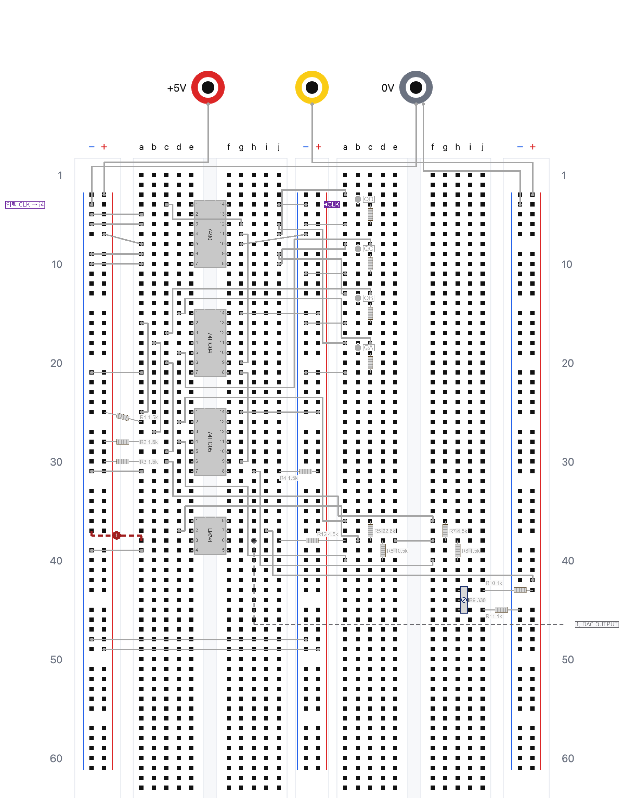</figure><p class="list-head">먼저 뽑아요</p><ul class="removals"><li class="removal"><span class="box"></span><span class="n">1</span><span class="text">좌 a38 → 좌 GND레일37행 · VP: U4 pin 3 -&gt; GND 레일</span></li></ul><p class="list-head">계측 — 꽂지 않고 물어요</p><ol class="probes"><li class="probe"><span class="box"></span><span class="n">1</span><span class="route">DAC OUTPUT → 좌 h38</span><span class="desc">오실로스코프 CH — U4 pin 6 (DC 결합)</span></li></ol></div>
<div class="stage" data-fit="17"><h3>단계 6</h3><figure class="board">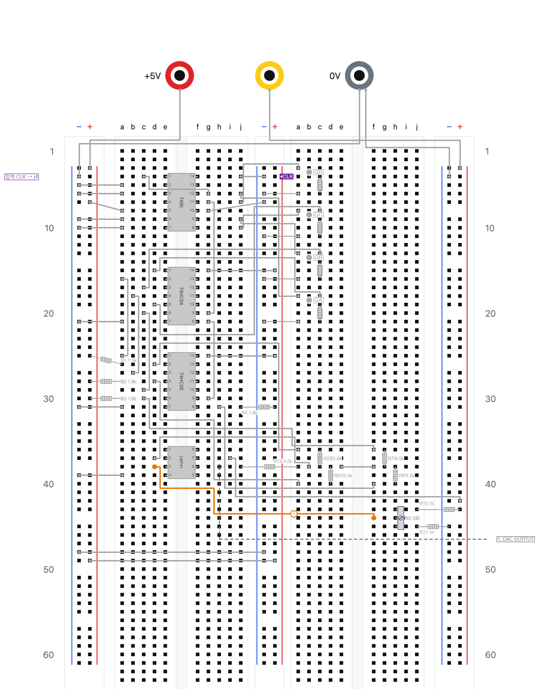</figure><ol class="steps"><li class="step" data-kind="sig"><span class="box"></span><span class="n" style="background:#e67800">1</span><span class="route">좌 d38 → 우 f44</span><span class="desc">VP: U4 pin 3 -&gt; R9 가운데 단자</span></li></ol><p class="list-head">계측 — 꽂지 않고 물어요</p><ol class="probes"><li class="probe"><span class="box"></span><span class="n">1</span><span class="route">DAC OUTPUT → 좌 h38</span><span class="desc">오실로스코프 CH — U4 pin 6 (DC 결합)</span></li></ol><p><span class="box"></span><b>확인:</b> 같은 프로브 자리에서 T2 스텝 3과 T4를 채워요. 계단이 보이지 않으면 R9를 양 끝까지 돌린 두 자리의 최소·최대를 함께 적고 조교에게 물어요.</p></div>
<div class="fit" data-fit="18">
<div class="wirebox"><h3>완성본</h3>
<figure class="board">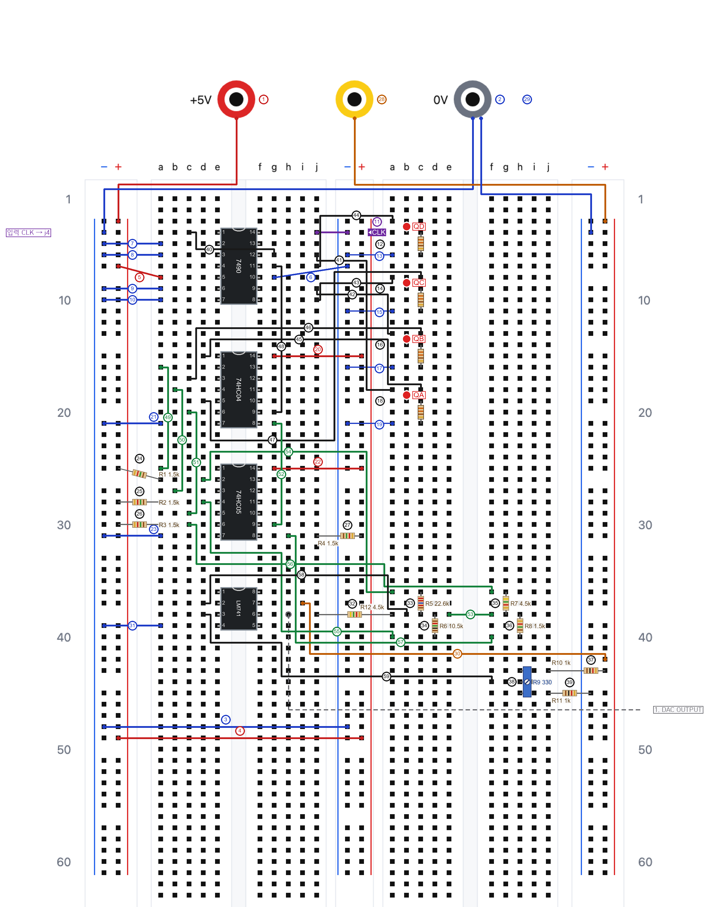</figure>
</div></div>
<div class="fit" data-fit="19">
<div class="unused"><b>미사용 핀</b><div class="chipunused"><b>U2 = 74HC04</b><ul><li><span class="box"></span>미사용 입력핀 11, 13 · 연결하지 않음 · 미사용 게이트 — 접지 생략</li></ul></div><div class="chipunused"><b>U3 = 74HC05</b><ul><li><span class="box"></span>미사용 입력핀 11, 13 · 연결하지 않음 · 미사용 게이트 — 접지 생략</li></ul></div><div class="chipunused"><b>U4 = LM741</b><ul><li><span class="box"></span>미사용 1, 5, 8 · 연결하지 않음 · OFFSET NULL · NC</li></ul></div></div>
<div class="tblock">
<h3>T2 · DAC 출력 전압 최소·최대·피크-피크 기록</h3>
<p class="table-purpose">V+를 GND에 물렸을 때와 전압 분배기에 물렸을 때 DAC OUTPUT의 최소·최대·피크-피크 전압을 잰다.</p>
<table>
<thead>
<tr>
<th>스텝</th>
<th>조작</th>
<th>최소</th>
<th>최대</th>
<th>피크-피크</th>
</tr>
</thead>
<tbody>
<tr><td>2</td><td>U4 pin 3을 GND에 물리고 발생기 1.0kHz로 DAC OUTPUT을 본다(p16)</td><td class="fill"></td><td class="fill"></td><td class="fill"></td></tr>
<tr><td>3</td><td>U4 pin 3을 분배기 가운데 단자(R9)로 옮기고 같은 조건으로 본다(p17)</td><td class="fill"></td><td class="fill"></td><td class="fill"></td></tr>
</tbody>
</table>
<p class='readout'>계측기 설정 — 모드·레인지·단위: ________________________________</p>
</div>
<div class="tblock">
<h3>T3 · DAC 출력 파형 (V+ = GND)</h3>
<div class="expected"><b>예상</b> — p11은 "V+를 GND에 연결하면" 출력이 Vout = -(Rf/R1·V1 + Rf/R2·V2 + Rf/R3·V3 + Rf/R4·V4)라고 적는다. 식의 V1~V4는 0 이상이므로 식이 주는 값은 모든 카운트에서 0 이하다. 그런데 U4의 음전원 핀(pin 4)은 GND이고, p5는 소자가 공급 전압 이상을 출력할 수 없다고 적는다. p12는 "DAC Output이 음의 값(0V 이하)을 갖지 않도록" 전압 분배기를 둔다고 적는다. 그래서 식이 주는 계단이 화면에 그대로 나온다고 예상하지 않는다. 이 셈은 교안 원문이 아니다. 단일 +15V로 LM741을 쓰는 문제는 미확정 표에 올렸다. 교안은 이 절차의 결과 화면을 따로 적지 않는다. p18 왼쪽 사진은 평평한 선이고 오른쪽은 계단인데, 어느 사진이 어느 절차인지 교안이 밝히지 않는다(vision 판독, 미확정 표). 보이는 개형을 그대로 그리고 T2 스텝 2에 최소·최대·피크-피크를 적는다. 예상 전압 숫자는 교안에 없어 적지 않는다.</div>
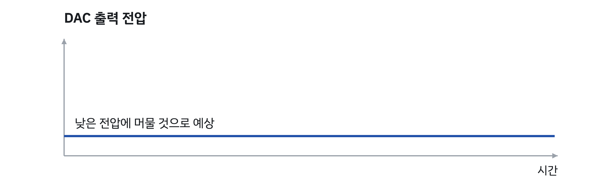
<div class="sketch"></div>
<p class='readout'>판독 조건 — CH1 ______ V/div · CH2 ______ V/div · time/div ______ · 프로브 ______× · 모드  [ ] Y-T   [ ] X-Y</p>
<p class='readout'>캡션: ____________________     사진 파일: ____________________</p>
<div class="differs"><b>예상과 다른 점</b></div>
</div>
<div class="tblock">
<h3>T4 · DAC 출력 파형 (V+ = 전압 분배기)</h3>
<div class="expected"><b>예상</b> — p18의 예상 결과는 "내림차순 계단 형태로 출력"이다. p8대로 카운트가 0000부터 1001까지 열 값을 돌므로 한 주기의 계단은 열 단이다. 1.0kHz 클록이면 한 단이 1ms, 한 주기가 10ms다. 단 수와 시간은 p8·p16에서 굴린 셈이며 교안 원문이 아니다. p18 오른쪽 사진의 수평 눈금은 M 2.00ms다(vision 판독). 교안 소자값으로 반전 가산기 식을 이상 소자로 굴리면 분배기 전 범위·모든 카운트에서 출력이 U4 전원 +15V를 넘어, p18의 계단 사진과 어긋난다. 셈은 미확정 표에 있고 교안 원문이 아니다. 어느 쪽이 맞는지는 실측으로 가른다. 보이는 개형과 단 수를 그대로 그리고 T2 스텝 3에 최소·최대·피크-피크를 적는다. 예상 전압 숫자는 적지 않는다.</div>
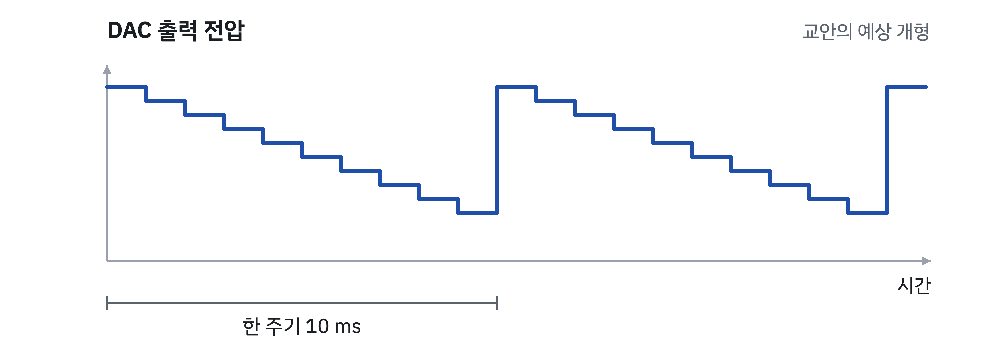
<div class="sketch"></div>
<p class='readout'>판독 조건 — CH1 ______ V/div · CH2 ______ V/div · time/div ______ · 프로브 ______× · 모드  [ ] Y-T   [ ] X-Y</p>
<p class='readout'>캡션: ____________________     사진 파일: ____________________</p>
<div class="differs"><b>예상과 다른 점</b></div>
</div>

<div class="circuit-notes"><b>메모</b></div>
</div></section>
<section class="circuit">
<div class="fit" data-fit="20"><div class="trail">실험 1: C1 › C2 › <b>C3</b></div><h2>C3 · 실험 1 — 4~6. 핀 개방·Rf 변경·병렬 저항 (74HC04 + 74HC05 + LM741) · 기록: T5, T6, T7, T8, T9</h2><div class="banner">앞 회로(C2)를 그대로 두고 이어 붙여요. 점퍼선은 뽑지 않아요</div></div>
<div class="stage" data-fit="21"><h3>단계 1</h3><p class="operation">발생기 출력을 끄고 바꾼 뒤 켜서 봐요 · ① U2 pin 2→U3 pin 1 선의 U3 쪽 끝을 뽑고 T5, 다시 꽂기 ② U2 pin 4→U3 pin 3으로 같은 방법 T6 ③ U2 pin 6→U3 pin 5로 T7 ④ R12를 2.7k로 바꾸고 T8, 4.5k로 되돌리기 ⑤ R6 양 끝에 68k를 덧꽂고 T9, 뽑기</p><figure class="board"></figure><p class="list-head">계측 — 꽂지 않고 물어요</p><ol class="probes"><li class="probe"><span class="box"></span><span class="n">1</span><span class="route">DAC OUTPUT → 좌 h38</span><span class="desc">오실로스코프 CH — U4 pin 6 (DC 결합)</span></li></ol><p><span class="box"></span><b>확인:</b> 끝난 보드가 C2 완성본과 같은지(세 선이 다시 꽂혔고 R12가 4.5k이며 68k가 빠졌는지) 그림과 대조했나요?</p></div>
<div class="fit" data-fit="22">
<div class="wirebox"><h3>완성본</h3>
<figure class="board"></figure>
</div></div>
<div class="fit" data-fit="23">
<div class="unused"><b>미사용 핀</b><div class="chipunused"><b>U2 = 74HC04</b><ul><li><span class="box"></span>미사용 입력핀 11, 13 · 연결하지 않음 · 미사용 게이트 — 접지 생략</li></ul></div><div class="chipunused"><b>U4 = LM741</b><ul><li><span class="box"></span>미사용 1, 5, 8 · 연결하지 않음 · OFFSET NULL · NC</li></ul></div></div>
<div class="tblock">
<h3>T5 · 7404 핀 2와 7405 핀 1 사이 개방 출력 파형</h3>
<div class="expected"><b>예상</b> — QA(LSB) 비트의 7404 출력(U2 pin 2)과 7405 입력(U3 pin 1) 사이 선을 뽑은 상태의 DAC OUTPUT이다. 교안 p19는 사진만 싣고 결과를 문장으로 적지 않는다. 뽑은 뒤 U3 pin 1은 아무 데도 물리지 않은 입력이 된다. TI SCLS080F(SN74HC05)는 떠 있는 입력의 출력 값을 정하지 않으므로 이 문서는 개형을 예상하지 않는다. 이 판단은 교안 원문이 아니며 미확정 표에 올렸다. 보이는 개형을 그대로 그리고, 끝나면 선을 다시 꽂는다.</div>
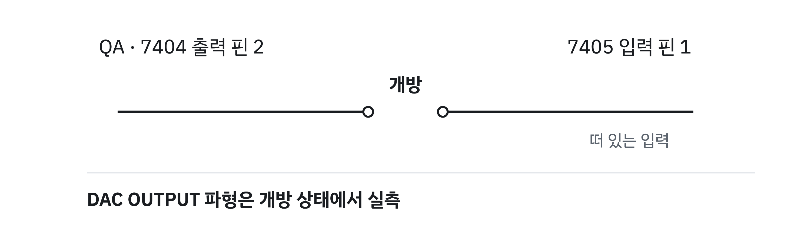
<div class="sketch"></div>
<p class='readout'>판독 조건 — CH1 ______ V/div · CH2 ______ V/div · time/div ______ · 프로브 ______× · 모드  [ ] Y-T   [ ] X-Y</p>
<p class='readout'>캡션: ____________________     사진 파일: ____________________</p>
<div class="differs"><b>예상과 다른 점</b></div>
</div>
<div class="tblock">
<h3>T6 · 7404 핀 4와 7405 핀 3 사이 개방 출력 파형</h3>
<div class="expected"><b>예상</b> — QB 비트의 U2 pin 4와 U3 pin 3 사이 선을 뽑은 상태의 DAC OUTPUT이다. T5와 같은 이유로 개형을 예상하지 않는다. 이 판단은 교안 원문이 아니다. 보이는 개형을 그대로 그리고, 끝나면 선을 다시 꽂는다.</div>
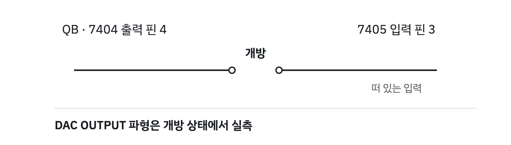
<div class="sketch"></div>
<p class='readout'>판독 조건 — CH1 ______ V/div · CH2 ______ V/div · time/div ______ · 프로브 ______× · 모드  [ ] Y-T   [ ] X-Y</p>
<p class='readout'>캡션: ____________________     사진 파일: ____________________</p>
<div class="differs"><b>예상과 다른 점</b></div>
</div>
<div class="tblock">
<h3>T7 · 7404 핀 6과 7405 핀 5 사이 개방 출력 파형</h3>
<div class="expected"><b>예상</b> — QC 비트의 U2 pin 6과 U3 pin 5 사이 선을 뽑은 상태의 DAC OUTPUT이다. T5와 같은 이유로 개형을 예상하지 않는다. 이 판단은 교안 원문이 아니다. 교안 p19는 QD 비트(U2 pin 8과 U3 pin 9 사이)를 열지 않는다. 보이는 개형을 그대로 그리고, 끝나면 선을 다시 꽂는다.</div>

<div class="sketch"></div>
<p class='readout'>판독 조건 — CH1 ______ V/div · CH2 ______ V/div · time/div ______ · 프로브 ______× · 모드  [ ] Y-T   [ ] X-Y</p>
<p class='readout'>캡션: ____________________     사진 파일: ____________________</p>
<div class="differs"><b>예상과 다른 점</b></div>
</div>
<div class="tblock">
<h3>T8 · Rf 2.7k 출력 파형</h3>
<div class="expected"><b>예상</b> — R12(4.5k)를 2.7k로 바꾼 상태의 DAC OUTPUT이다. 반전 가산기에서 비트 하나가 바뀔 때 출력이 움직이는 양은 그 비트 가지의 전류 변화에 Rf를 곱한 것이다. 그래서 계단 한 단의 높이는 Rf에 비례하고, Rf가 4.5k에서 2.7k로 바뀌면 2.7/4.5 = 0.6배가 된다. V+가 0이 아니면 출력 식에 V+ × (1 + Rf × Σ1/Ri) 항이 있어 계단 전체의 위치도 Rf에 따라 바뀐다. 이 셈들은 교안 원문이 아니며 출력이 공급 전압 안에 있을 때만 맞는다 — 미확정 표의 이상 셈대로면 Rf 2.7k에서도 +15V 아래로 셈되는 것은 COUNT 8·9뿐이고 나머지 카운트는 +15V를 넘는다. 교안 p20은 사진 두 장만 싣는다. T4와 나란히 그리고 단 높이를 비교한다.</div>
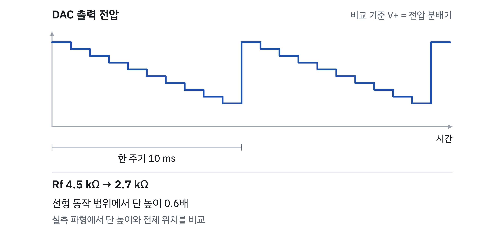
<div class="sketch"></div>
<p class='readout'>판독 조건 — CH1 ______ V/div · CH2 ______ V/div · time/div ______ · 프로브 ______× · 모드  [ ] Y-T   [ ] X-Y</p>
<p class='readout'>캡션: ____________________     사진 파일: ____________________</p>
<div class="differs"><b>예상과 다른 점</b></div>
</div>
<div class="tblock">
<h3>T9 · 10.5k ∥ 68k 출력 파형</h3>
<div class="expected"><b>예상</b> — Rf를 4.5k로 되돌린 뒤 R6(10.5k, QB 가지)에 68k를 병렬로 단 상태의 DAC OUTPUT이다. 병렬 합성은 10.5 × 68 / 78.5 ≈ 9.1k라 QB 가지의 저항이 줄어 QB 비트의 비중이 커진다. 그래서 QB가 바뀌는 단(COUNT 1→2, 3→4, 5→6, 7→8)의 높이가 다른 단과 달라질 수 있다. 이 셈과 단 목록은 교안 원문이 아니며 출력이 공급 전압 안에 있을 때만 맞는다(미확정 표의 이상 셈). 교안 p21은 "출력 파형 비교"만 지시하고, 사진 두 장의 차이는 이 해상도에서 단정할 수 없다(vision 판독, 미확정 표). T4와 나란히 그리고 단 높이가 고른지 비교한다.</div>
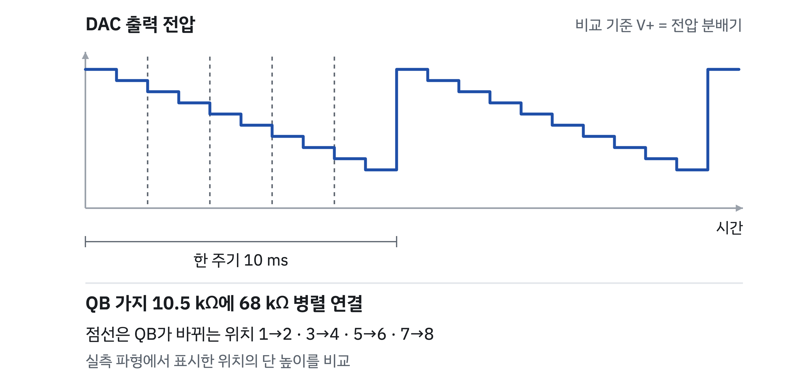
<div class="sketch"></div>
<p class='readout'>판독 조건 — CH1 ______ V/div · CH2 ______ V/div · time/div ______ · 프로브 ______× · 모드  [ ] Y-T   [ ] X-Y</p>
<p class='readout'>캡션: ____________________     사진 파일: ____________________</p>
<div class="differs"><b>예상과 다른 점</b></div>
</div>

<div class="circuit-notes"><b>메모</b></div>
</div></section></section>
<style id="fit-pages">
@page fit-0 { size: 210mm 230mm; margin: 12mm 10mm; }
[data-fit="0"] { page: fit-0; }
@page fit-1 { size: 210mm 411mm; margin: 12mm 10mm; }
[data-fit="1"] { page: fit-1; }
@page fit-2 { size: 210mm 391mm; margin: 12mm 10mm; }
[data-fit="2"] { page: fit-2; }
@page fit-3 { size: 210mm 334mm; margin: 12mm 10mm; }
[data-fit="3"] { page: fit-3; }
@page fit-4 { size: 210mm 322mm; margin: 12mm 10mm; }
[data-fit="4"] { page: fit-4; }
@page fit-5 { size: 210mm 279mm; margin: 12mm 10mm; }
[data-fit="5"] { page: fit-5; }
@page fit-6 { size: 210mm 341mm; margin: 12mm 10mm; }
[data-fit="6"] { page: fit-6; }
@page fit-7 { size: 210mm 57mm; margin: 12mm 10mm; }
[data-fit="7"] { page: fit-7; }
@page fit-8 { size: 210mm 595mm; margin: 12mm 10mm; }
[data-fit="8"] { page: fit-8; }
@page fit-9 { size: 210mm 564mm; margin: 12mm 10mm; }
[data-fit="9"] { page: fit-9; }
@page fit-10 { size: 210mm 524mm; margin: 12mm 10mm; }
[data-fit="10"] { page: fit-10; }
@page fit-11 { size: 210mm 367mm; margin: 12mm 10mm; }
[data-fit="11"] { page: fit-11; }
@page fit-12 { size: 210mm 367mm; margin: 12mm 10mm; }
[data-fit="12"] { page: fit-12; }
@page fit-13 { size: 210mm 352mm; margin: 12mm 10mm; }
[data-fit="13"] { page: fit-13; }
@page fit-14 { size: 210mm 359mm; margin: 12mm 10mm; }
[data-fit="14"] { page: fit-14; }
@page fit-15 { size: 210mm 337mm; margin: 12mm 10mm; }
[data-fit="15"] { page: fit-15; }
@page fit-16 { size: 210mm 331mm; margin: 12mm 10mm; }
[data-fit="16"] { page: fit-16; }
@page fit-17 { size: 210mm 327mm; margin: 12mm 10mm; }
[data-fit="17"] { page: fit-17; }
@page fit-18 { size: 210mm 279mm; margin: 12mm 10mm; }
[data-fit="18"] { page: fit-18; }
@page fit-19 { size: 210mm 621mm; margin: 12mm 10mm; }
[data-fit="19"] { page: fit-19; }
@page fit-20 { size: 210mm 64mm; margin: 12mm 10mm; }
[data-fit="20"] { page: fit-20; }
@page fit-21 { size: 210mm 328mm; margin: 12mm 10mm; }
[data-fit="21"] { page: fit-21; }
@page fit-22 { size: 210mm 279mm; margin: 12mm 10mm; }
[data-fit="22"] { page: fit-22; }
@page fit-23 { size: 210mm 1139mm; margin: 12mm 10mm; }
[data-fit="23"] { page: fit-23; }
</style>
